Arweqah Platform User Manual
Welcome to the Arweqah platform, the internal system of Arweqah Alreyadah. It brings your daily work into one place: your tasks, your tickets, your work details and your notifications. For managers and HR it also holds the tools for employees, the organization structure, permissions and the audit log.
Who this guide is for
- Every employee: who wants to know where to find their tasks, how to send a ticket and how to keep their account safe.
- Managers and unit heads: who want to follow their team, their unit and the units below it.
- HR and system administrators: who manage employees, roles, and permissions.
The guide is written in plain language, with no technical terms. What you see on the platform differs from one person to another according to their permissions, so some pages described here may not be in your menu. That is normal.
How to read this guide
- Start with «Platform basics». It explains the words that come back on every page: role, scope, permission and platform admin mode.
- Every page has its own section in the same order: what the page is, who sees it, what you can do on it, the steps of the main jobs, the business rules, and tips for common problems.
- The «permission key» in the tables (for example
tasks.create) is the name of the permission as it appears on the permissions page, together with its Arabic and English label. Quote it to your administrator when you need to ask for a permission. - The buttons and names in the guide are the ones on your screen. If you switch the language, you will see the matching name.
Sections of the guide
The full list of sections is in the side menu; click any section to jump to it.
Getting started
1. Platform basics
This page explains the ideas that come back on every page of the platform. Once you know them, any new screen is easy to understand.
Companies and one structure for the group
- The platform serves several companies of the group, and every employee belongs to one company.
- The organization structure is one for the whole group: sectors, departments, sections and units, and every employee belongs to one of them. A unit may be shared between companies.
- Every unit has a head (the leader), set from the employee form or by job title. The head of a unit automatically receives a role made for that unit.
- This structure decides «who is under whom», and permission scopes are built on it.
Roles
- A role is a group of permissions given to a person. A person can hold several roles.
- Roles that come with the system: Employee (every employee has it: the pages of their own account, their own tickets and tasks) and System Admin (every permission at the widest scope).
- Some roles are automatic: the system grants them by a rule (such as «head of a unit» or «job title»), so they change when your position or title changes.
- A permission can also be added to one person, a group of roles or a group of people. The «My access» page shows where each of your permissions comes from.
Scope: how far a permission reaches
Every permission has a scope that says which records it covers. For example, «View employees» with a different scope gives different results.
| Scope | Meaning | Example |
|---|---|---|
| Own record only | Only what concerns you | An employee sees their own tasks |
| Their unit | The unit you belong to (or manage) | A colleague sees their section's team |
| Their unit and 1 level below (up to 5 levels) | Your unit and a set number of levels below it | A sector head sees the departments directly under them |
| Their unit and below | Your unit and every unit under it | A department head sees all its sections and units |
| Their whole company | Every unit of your company | HR in one company |
| All companies | Everything in the group | System administrator |
Permissions
- Every page has a view key, and every button or action has its own key (create, edit, delete, approve, reject, export, import…).
- The platform hides what you do not have: a page whose key you lack is not in your menu, and a button whose key you lack is not on the page.
- What is outside your scope looks as if it does not exist: if you open a record outside your scope you get «not found» (404), not «forbidden», so you cannot even tell whether the record exists.
- If you need a permission, ask your administrator and give its name as shown on «My access».
Platform admin mode
The administration pages (roles, permissions, page visibility, list management, audit log, settings…) appear only while platform admin mode is on. A person who may use it works as an ordinary employee until they switch it on. This protects them from changing something important by mistake.
- Press «Platform admin mode» at the top of the page. The button shows only for people who hold
admin_mode.use(«Use platform admin mode»). - Enter a fresh code from the authenticator app. A code already used is refused, so wait for the next one if needed. Backup codes are not accepted here.
- The administration pages appear and the button reads «Admin mode on». To stop, press «Turn off platform admin mode».
- The mode stops by itself after 30 minutes without admin activity; a message tells you, and you switch it on again when needed.
- Repeated wrong codes lock the attempts for a few minutes.
- The permissions of your administrative role (such as System Admin) are not counted on «My access» and do not work unless the mode is on.
Signing in as another employee
A feature for system administrators only, off by default and switched on in Settings → Security. When on, a person who holds impersonation.start («Sign in as another employee») and is in platform admin mode can work as any active employee, to see what they see and solve their problem.
- The button «Sign in as this employee» is on the employees list and on the employee's page. After you confirm, a fixed bar shows: «You are working as … — signed in by …» with a «Back to my account» button.
- The session ends when you go back to your account, or by itself after some idle minutes (30 by default).
- What is refused inside the session: turning on admin mode, changing the employee's security (authenticator, devices, sessions), their roles, groups and access, their account status, and the security settings.
- Everything done is recorded in the audit log under the employee's name with the administrator's beside it, and the employee is notified afterwards.
The welcome tour
At your first sign-in the platform highlights its real elements one by one and explains each. You can skip it and restart it from «Restart the tour». The details are in the section «The welcome tour».
Language and page direction
- The platform is in Arabic (right to left, the default) and in English (left to right).
- Switch the language with the button in the top bar or from «Profile». Your choice is saved in your account for every device.
Light and dark theme
Choose «Light», «Dark» or «Follow the device» with the button in the top bar or from «Profile». Every page works in both themes.
Ways to view lists
- Every list shows as a table or cards with the «View» switch, and some lists have a third view that suits their data: a Kanban board for tasks and tickets, and a chart and an icicle chart for the organization structure.
- The platform remembers the last view you chose for each list.
Search and filters
- Above every list is a search box that searches the texts the table shows.
- Beside it are filters for everything that can narrow the list: status, owner, unit, type, dates, yes/no. Applied filters are shown and each can be removed; «Clear filters» removes them all.
Export and import
- Export: an «Export» button on every list. You choose the scope (the rows shown on the page, or all results of the current search and filters), the columns and the file type (Excel or CSV). It needs the export key of that page.
- Import: on lists whose records can be created from a file (such as employees and companies). You download the template (it has drop-downs with the system's options), fill it in and upload it. The system checks the file, tells you how many rows are valid and what is wrong in each row, and imports only the valid ones.
- Anywhere that asks for a file or a picture uses the file drop box: drag the file onto it or click to browse; it checks the file type and the largest size.
Row actions are icons
At the end of every row are icons, one for each action on it (edit, delete, open…). Hold the pointer over an icon to see its name. Clicking anywhere on the row itself opens its details in a page or a dialog.
Notifications
The bell in the top bar alerts you to what concerns you, and every notification is on the «Notifications» page. Some also reach you by e-mail, and the e-mail never carries the text of conversations. The details are in the section «Notifications».
The four message colors
Every message on the platform (a notice in the page, a pop-up message or a status badge) has one of four colors, with an icon, so the meaning never rests on color alone:
| Color | Meaning |
|---|---|
| Blue (petrol) | Information |
| Yellow | Warning |
| Red | Error |
| Green | Success |
The audit log
The platform records sensitive operations: sign-ins, changes to employees, roles and permissions, work on tasks and tickets… who did what and when, in sentences you can understand and in categories. Secrets are never recorded. It is read by people who hold the audit-log view key, in platform admin mode.
2. Signing in
There is no password on the platform. You sign in with the company Microsoft account or with your work e-mail and the authenticator-app code (Microsoft Authenticator or Google Authenticator). The authenticator app is mandatory for every employee, and no page works before it is linked and the code is verified.

Who can sign in
- Only employees for whom HR has created an account. There is no self sign-up, and a deactivated account is refused.
- This page has no permission key: it is for anyone who has not signed in yet.
What you can do
| Action | What happens | Permission key |
|---|---|---|
| Sign in with Microsoft | You sign in with the company account at Microsoft, then the app code is asked | Not needed |
| Type the work e-mail then «Continue» | Takes you to the code field | Not needed |
| Enter the app code (6 digits) then «Sign in» | Opens the platform | Not needed |
| «Change e-mail» | Takes you back to type another e-mail | Not needed |
| «Use a backup code» | You sign in with one of the codes you saved when linking | Not needed |
| «Remember this device and do not ask for the code there» | Trusts the browser, so the code is not asked there for the time the platform administrator set | Not needed |
How to
The usual sign-in with the work e-mail
- Type your work e-mail and press «Continue». If a bot-protection check appears, complete it.
- Open the authenticator app and enter the 6-digit code shown for your account.
- The platform opens. The code changes every 30 seconds.
Signing in with the Microsoft account
- Press «Sign in with Microsoft» and sign in with the company account.
- Enter the authenticator-app code on the «Verify your identity» page and press «Continue». Even with Microsoft, the code is asked.
First sign-in: linking the authenticator app
- Type your e-mail and continue. A message says: «This is your first sign-in. We e-mailed you a link with a QR code».
- Open the link in your e-mail. Install Microsoft Authenticator or Google Authenticator on your phone.
- In the app add an account and scan the QR code. If you cannot scan, enter the key shown by hand.
- Enter the code shown in the app and press «Confirm and link the app».
- Backup codes appear. They are shown only once and each works one time. Copy them or download them as a file and keep them safe, then «Continue».
Business rules
- No password and no self sign-up, and the error is one generic message: «The email or the code is not valid» (it does not say which is wrong). (FR-01)
- A code is never accepted twice: each code is used once, so if yours is refused, wait for the next one. (FR-01)
- After 5 wrong codes the account is locked for a while (15 minutes) and «Too many attempts. Try again in a moment» appears. (FR-01)
- More than 5 sign-in attempts in a minute show «Too many attempts. Wait a minute and try again».
- Microsoft sign-in is for the company account only and for an employee whose account was created beforehand. If «Microsoft sign-in is not set up yet» appears, contact the system administrator. (FR-03)
- No employee is added with an e-mail outside the domains the administrator set.
- The session ends after 12 hours, and at once if your account is deactivated.
- Signing in with an e-mail always asks for the code. A «trusted device» skips the code only after a Microsoft sign-in, and for the time the platform administrator set.
- The sign-in is recorded in the audit log. (FR-11)
Tips and common problems
| Problem | Cause | Fix |
|---|---|---|
| The code is refused | It was already used, or your phone's clock is wrong | Wait for the next code, and set the phone's time to automatic |
| «Too many attempts» appeared | You passed the allowed attempts | Wait, then try again |
| You lost your phone | No code available | Use «Use a backup code», or ask HR to reset the app and a new invitation reaches you by e-mail |
| The link is not valid or has expired | The app-linking link is old | Ask HR for a new invitation |
| The QR e-mail did not arrive | It is in junk mail, or the account is not active | Check junk mail, then ask HR |
| «The protection check did not pass» | The bot check did not finish | Try again |
3. Home
The first page after signing in: your day at a glance. The numbers of your tasks and tickets and what needs your attention now, charts of them, the task matrix, and for managers the employee statistics. Each number opens the list it counts, so the details are one click away.
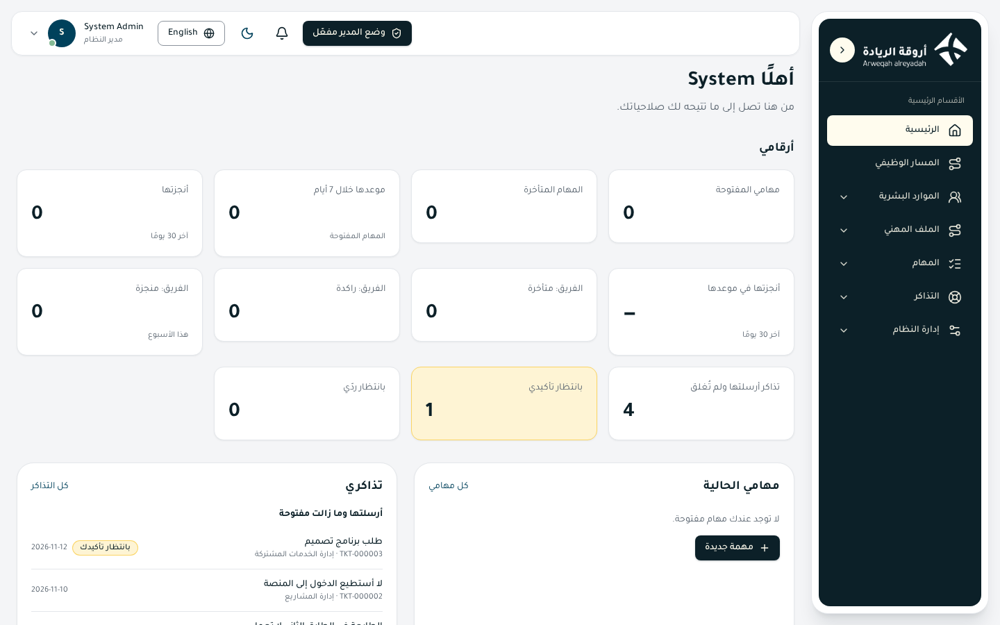
Who sees it
- The page is for every employee and needs no view key of its own. Its sections show according to the keys you hold (see the table), and a section disappears if the administrator hides its related page from your role.
- It does not need platform admin mode.
- The «Employee» role holds the tasks and tickets keys at the «Own record only» scope, so you see your own numbers. A unit head holds the task matrix at «Their unit and below», so the team numbers and the employee statistics show for them.
| Section on the page | What it needs | Default role |
|---|---|---|
| «My numbers» (tasks) and my current tasks | tasks.view (View my tasks and task details) | Employee, unit head |
| Ticket numbers and «My tickets» | tickets.view (View the tickets page and ticket details) | Employee, unit head |
| Task matrix | tasks.matrix_view (View the task matrix) | Unit head (their unit and below); the Employee if it is given to them |
| Team numbers | A tasks scope wider than «Own record only» | Unit head |
| Employee statistics | employees.view (View employees) at a scope wider than «Own record only» | Unit head, HR, system administrator |
What you can do
| Action | What happens | Permission key |
|---|---|---|
| Click a number in «My numbers» | Opens the list of tasks or tickets it counts (for example «Overdue tasks» opens tasks filtered by overdue) | tasks.view / tickets.view |
| Click a task title in «My current tasks» | Opens the task details and its conversation | tasks.view |
| «All my tasks» | Opens the tasks page | tasks.view |
| «New task» (shown when you have no open tasks) | Opens the new-task form | tasks.create (create a task) |
| «All tickets» | Opens the tickets page | tickets.view |
| Choose «View» in the matrix: «My tasks» or «My team's tasks» | Switches the tasks shown | tasks.matrix_view |
What you see
- My numbers (tasks): My open tasks, Overdue tasks, Due within 7 days, Finished (last 30 days), Finished on time (a percentage), and two tiles that appear when something waits for you: «Awaiting my review» and «Awaiting my approval».
- Team numbers (for those with a team scope): Team: overdue, Team: stale, Team: finished (this week).
- Ticket numbers: Tickets I sent, still open; Awaiting my confirmation; Awaiting my reply.
- My current tasks: the nearest open tasks by due date, with a bar that divides your open tasks by status.
- My tickets: what you sent and is still open, what waits for your reply, and what waits for your confirmation.
- Charts: open tasks by status, tasks finished on time and late, my tickets by status, and the employees (active, IDs and contracts).
- The task matrix: your open tasks in four squares by importance and urgency: «Important and urgent» (start with these), «Important, not urgent» (plan them before they become urgent), «Urgent, not important» (finish them fast or hand them to someone), «Neither» (do them when there is time).
- Employee statistics: Employees, Active, IDs expired or expiring (within 30 days), Contracts ending soon (within 30 days), and a «Need a unit» tile when an employee has no unit.
How to
Find what needs your attention
- Open Home and look at the tiles with an alert tone (red or yellow): overdue items, and what waits for your reply, confirmation or approval.
- Press the tile to open what it counts.
- Do what is needed and come back to Home to see the number go down.
Set your priorities with the matrix
- Look at the «Important and urgent» square and start with its tasks.
- Plan the «Important, not urgent» tasks before their date comes close.
- If you are a manager, switch «View» to «My team's tasks» to see your team's tasks.
Business rules
- A task is «important» when its priority is high, and «urgent» when its date is near or past or it was marked urgent. (FR-49)
- The numbers and sections are counted from your scope only; nothing outside it enters any number.
- The «Awaiting my review» and «Awaiting my approval» tiles show only when something waits for you.
- The employee statistics are about other people, so an ordinary employee (scope «Own record only») does not see them.
- A greeting with your first name appears at the top of the page.
Tips
- If a section does not appear, its key is not yours or its page is hidden from your role; check «My access».
- A number «0» is not a fault: it means nothing waits for you.
4. The welcome tour
A guided tour that appears once at your first sign-in: it dims the screen and highlights the real elements one by one, explaining each in a bubble with a title, a text and the buttons «Next», «Back» and «Skip». It starts with your account, then Home, then the pages you hold. A manager has a separate tour for the administration pages, and a page in Settings to edit the tour's wording.
Who sees it
- The general tour: every employee at first sign-in, with no permission key.
- The administration tour: whoever holds
admin_mode.use(«Use platform admin mode») at the first time admin mode is turned on; for anyone else it looks as if it does not exist. - The tour settings page (Settings, then the «Welcome tour» tab): in platform admin mode, and it needs
tour.settings_view(«View the welcome tour settings»). By default only the System Admin role has it.
What you can do
In the tour itself (every employee)
| Action | What happens | Permission key |
|---|---|---|
| «Next» / «Back» (or the arrow keys) | You move between steps, even between pages | Not needed |
| «Skip» (or Esc) | The tour ends and is recorded as skipped | Not needed |
| «Done» on the last step | The tour is recorded as finished | Not needed |
| «Restart the tour» from your account menu or from «Profile» | The general tour starts again from the beginning | Not needed |
| «Show me» on the «There is something new» card | Shows only the new steps | Not needed |
| «Later» on that card | Postpones; the steps count as seen | Not needed |
On the tour settings page (for managers)
| Action | What happens | Permission key |
|---|---|---|
| View the list | A table of steps: Step, Order, Tour (General / Administration), State (Shown / Switched off), Last change; with a table or cards view | tour.settings_view (View the welcome tour settings) |
| Search and filters | Search in the title and text, and filters by tour, by state and by «Changed from the original» | tour.settings_view |
| The «Edit» icon (or clicking the row) | Opens a dialog with the title and text in Arabic and English and a «The step is shown in the tour» switch | tour.settings_edit (Edit a welcome-tour step and switch it on or off) |
| The «Move the step up» and «Move the step down» icons | Move the step in the order | tour.settings_reorder (Reorder the welcome-tour steps) |
| The «Reset to original» icon (shown only for a changed step) | After confirmation the step's wording, order and visibility go back to what the system has | tour.settings_reset (Reset a welcome-tour step to its default wording) |
| «Export» | Exports the list of steps to Excel or CSV | tour.settings_export (Export the list of welcome-tour steps) |
How to
Restart the tour
- Press your name in the top bar to open your account menu.
- Press «Restart the tour». (Or from «Profile», the «Welcome tour» section, then «Restart the tour».)
Reword a step (for managers)
- Turn on platform admin mode, then open «Settings» and the «Welcome tour» tab.
- Click the step or its edit icon.
- Type the title and text in Arabic and English. Leave a field empty to show the original wording. Plain text, no formatting.
- Turn off the «The step is shown in the tour» switch if you want to hide it, then save.
- To go back to the original press the «Reset to original» icon and confirm.
Business rules
- The result of the tour (finished or skipped) is saved on your account, not in the browser, so it does not come back from another device. (FR-67)
- Every step shows only to someone who holds the key of its page and does not have it hidden; so two people see two different lists. Each step lists one line for everything you can do there.
- A step whose element does not show (for example on a phone, or with no data) is skipped silently.
- After new steps are released, someone who finished their tour is offered a «There is something new» card with only the new ones.
- The administration tour starts the first time admin mode is turned on, and is recorded separately from the general tour.
- A system administrator edits only the wording, the order and the visibility. The steps themselves (what is highlighted and where) come with the system and cannot be added or removed from Settings, and the manager cannot see anyone's progress in the tour.
- Every edit, reset to original or reorder is recorded in the audit log.
Tips
- Keyboard: arrows to move, Esc to skip.
- If you lost the tour, restart it at any time.
My account
5. Profile
Your own page: here you set the look and language of the platform, edit your contact details, see your work details as HR keeps them, and restart the welcome tour if you wish.
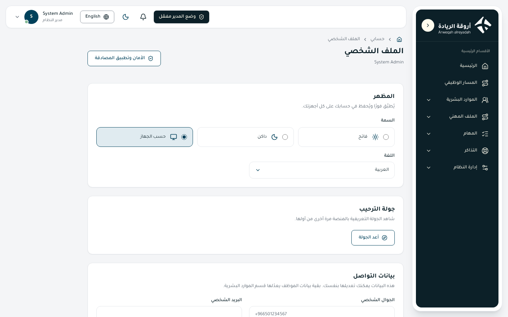
Who sees it
- View key:
profile.view(«View my profile»), and edit keyprofile.update(«Edit my contact details and preferences»). Their scope is «all» because they concern your own account only. - Held by everyone who has the Employee role, by unit heads, and by everyone who holds the «collaborator base».
- You find it in your account menu (press your name in the top bar, then «Profile»).
- It does not need platform admin mode.
What you can do
| Action | What happens | Permission key |
|---|---|---|
| Choose the theme: Light, Dark, Follow the device | The platform's look changes at once and is saved in your account | profile.update (Edit my contact details and preferences) |
| Choose the language: العربية, English | The language and the page direction change at once and your choice is saved | profile.update |
| Edit the personal phone | Your contact number is saved | profile.update |
| Edit the personal e-mail | Your personal e-mail is saved | profile.update |
| Edit the full name in English | Your English name is saved | profile.update |
| «Save changes» | Saves the contact details and shows «Changes saved» | profile.update |
| «Restart the tour» | The welcome tour starts again from the beginning | Not needed (every employee) |
| The «Security and authenticator app» link | Takes you to the Security page | security.view (View the security page) |
How to
Change the language or theme
- Open «Profile» from your account menu.
- In the «Appearance» section choose the theme (Light, Dark, Follow the device) and the language.
- The choice applies at once and is saved for all your devices.
Update your contact details
- In the «Contact details» section type the personal phone in international format, such as
+966501234567. - Type the personal e-mail and the full name in English (English letters and spaces only).
- Press «Save changes».
See your work details
In the «Work details» section you read: employee number, company, unit, job title, direct manager, work e-mail and start date. These are read-only.
Business rules
- You edit only three things yourself: the personal phone, the personal e-mail and the English name. HR updates the rest of the employee record.
- The phone must be in international format (such as +966501234567) or «International format, e.g. +966501234567» is shown; the e-mail must be well formed; the English name is English letters and spaces only.
- The theme and language are saved in your account, not in the browser, so they appear as you chose on any device.
- If your account is not linked to an employee record, only the appearance settings are shown, with a note saying so.
- Changing your details is recorded in the audit log.
Tips
- The «Save changes» button does not show? You do not hold
profile.update; ask the system administrator. - Changing the Arabic name or the work details is asked from HR.
6. Notifications
The platform alerts you to what concerns you: a reply to your ticket, a task assigned to you, a mention of your name in a conversation, or something waiting for your approval. Notifications reach you from the bell in the top bar, and all of them are together on the Notifications page.
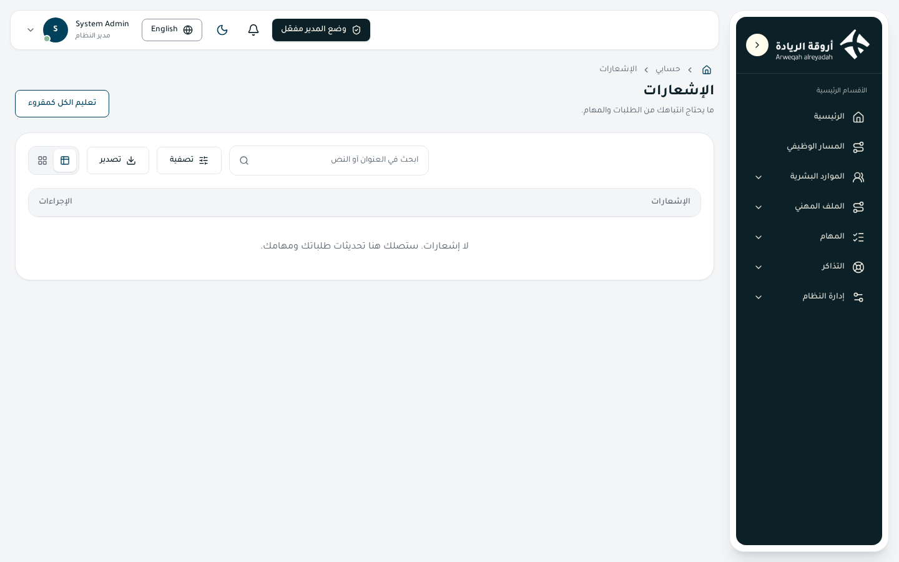
Who sees it
- View key:
notifications.view(«View the notifications page and the bell»), scope «all» because notifications are yours alone. - Held by everyone with the Employee role, by unit heads, and by the collaborator base. It does not need platform admin mode.
- Nobody sees another person's notifications.
What you can do
| Action | What happens | Permission key |
|---|---|---|
| Press the bell | A list opens with the latest five notifications and a «View all notifications» link | notifications.view (View the notifications page and the bell) |
| Click a notification in the bell or on the page | Opens the related page and marks it as read | notifications.view |
| «Mark all as read» (in the bell and on the page) | All your notifications become read | notifications.mark_read (Mark notifications as read) |
| The «Mark as read» icon on a row | Only this notification is marked | notifications.mark_read |
| The «Open» icon on a row | Opens the page linked to the notification | notifications.view |
| Search the title or text | Narrows the list | notifications.view |
| Filters: State (Unread / Read), From date, To date | Narrow the list | notifications.view |
| «Export» | Exports your notifications to Excel or CSV (scope and columns) | notifications.export (Export notifications) |
How to
Read your notifications
- Look at the bell: the yellow number on it is the count of unread ones («99+» if more).
- Press the bell, then press a notification to go straight to the task or ticket it is about.
- For older ones press «View all notifications».
Find an old notification
- Open the «Notifications» page.
- Type a word in the search box, or choose «Unread», or set dates.
- Open the notification by clicking its row.
Export your notifications
- On the page press «Export».
- Choose the scope (the rows shown or all results), the columns (Title, Text, Time, State) and the file type.
- Press «Export».
Business rules
- In-app notifications reach you at once, and some also reach you by e-mail in the background. The e-mail never carries the text of comments and conversations. (FR-08)
- An unread notification shows in heavier type, and a read one in a lighter color.
- Clicking a notification that has a link marks it read automatically and opens the link. A notification with no link opens nothing.
- You are notified when a task is assigned to you, when your ticket gets a reply, when your name is mentioned with
@in a conversation, when a confirmation or approval is asked of you, and when someone who signed in as you (a system administrator) finishes their session. - What you lack the key for does not show: a person without
notifications.mark_readdoes not see the mark-as-read buttons.
Tips
- You do not see the bell or the page? You do not hold
notifications.view, or the page is hidden from your role. - You got an e-mail but see no notification? Open the page and clear the filters; it may be filtered on «Unread».
7. Security
A page that shows how your sign-in is protected, and lets you watch the devices you are signed in on and end the ones you do not know. There is no password on the platform; the authenticator app on your phone is the key.
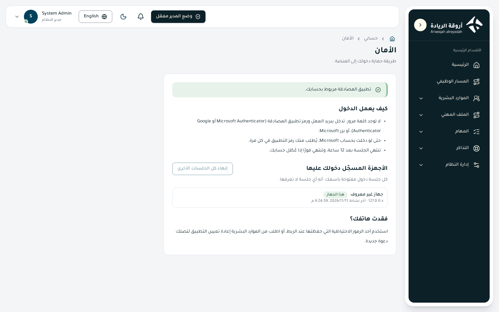
Who sees it
- View key:
security.view(«View the security page»), scope «all» because it concerns your own account. - Held by everyone with the Employee role, by unit heads, and by the collaborator base. You find it in your account menu. It does not need platform admin mode.
- The company-wide security settings (trusted devices, request limits and signing in as another employee) are another page for the system administrator: Settings, then the «Security» tab. It needs
security_settings.view(«View the security settings (trusted devices and request limits)») andsecurity_settings.edit(«Edit the security settings») in platform admin mode.
What you can do
| Action | What happens | Permission key |
|---|---|---|
| Read the authenticator-app status | Tells you whether it is linked to your account | security.view (View the security page) |
| «End the session» on a device | That session ends and a sign-in is needed again there | security.view |
| «End all other sessions» | Every session ends except your current one | security.view |
| «Remove trust» on a trusted device | The code is asked on that browser again | security.view |
| «Remember this device and do not ask for the code there» | Trusts the current browser | security.view |
What is on the page
- The status notice: «The authenticator app is linked to your account» (green) or «The authenticator app is not linked yet» (yellow).
- How sign-in works: no password; you sign in with the work e-mail and the app code or with the Microsoft button; even with Microsoft the code is asked every time; the session ends after 12 hours, and at once if your account is deactivated.
- Devices you are signed in on: every open session in your name, with the device name and last activity, and a «This device» mark on your current session.
- Trusted devices: the browsers you trusted and the date the trust ends.
- Lost your phone? A note on what to do.
How to
End a session you do not know
- Open «Security» from your account menu.
- In «Devices you are signed in on» look for a device or a time you do not know.
- Press «End the session» on it, or «End all other sessions» if you doubt your account.
- Tell HR or the system administrator if you suspect a break-in.
If you lose your phone
- On the sign-in page choose «Use a backup code» and enter one of the codes you saved when linking (each works once).
- If you cannot find them, ask HR to reset the app; a new invitation reaches you by e-mail to link the app again.
Business rules
- The authenticator app is mandatory, and nothing works on the platform before it is linked. (FR-02)
- You do not change the link from this page; a reset is done by asking HR.
- A trusted device skips the code only after a Microsoft sign-in and one code entry, and for a time the platform administrator sets. Signing in with the e-mail always asks for the code. If the time is 0 the option is off (the default).
- Ending a session or removing trust takes effect at once.
- A system administrator who signs in as you (the «Sign in as another employee» feature) cannot change your security from inside the session, and you are notified when it ends.
- When your account is deactivated, all your sessions end at once.
Tips
- A session with a browser or city you do not know? End it at once.
- On a shared device do not trust the device, and sign out from the top menu when you finish.
8. My access
A page where you read what you may do on the platform now, and which role or group gives you each permission, and how far each permission reaches. It is yours alone and nobody else sees it. It is the first place to open when you ask: «why do I not see this page?» or «why can I not use this button?».
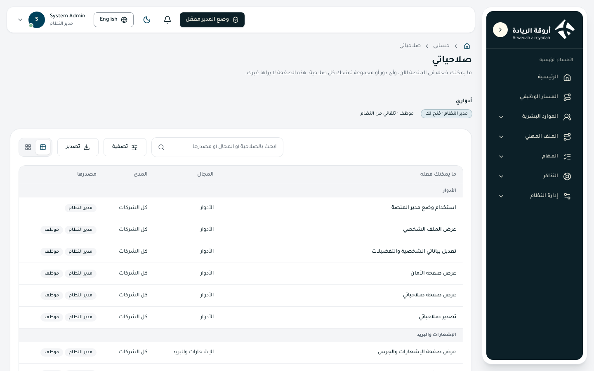
Who sees it
- View key:
my_access.view(«View my access page»), and the export keymy_access.export(«Export my access»). Their scope is «all» because the page concerns your own account. - Held by everyone with the Employee role, by unit heads, and by the collaborator base. You find it in your account menu. It does not need platform admin mode.
What you can do
| Action | What happens | Permission key |
|---|---|---|
| Read «My roles» | You see your roles, each marked «Automatic from the system» or «Given to you» | my_access.view (View my access page) |
| Browse the table | You see every permission: «What you can do», «Area», «Reach» and «Source», grouped by area | my_access.view |
| Search | By permission, area or source | my_access.view |
| Filters: Area, Reach, Source | Narrow the list | my_access.view |
| «Turn on platform admin mode» from the notice | Shown to someone with a hidden administrative role (see the rules) | admin_mode.use (Use platform admin mode) |
| «Export» | Exports your list of permissions to Excel or CSV | my_access.export (Export my access) |
Table columns
| Column | Meaning |
|---|---|
| What you can do | The name of the permission (every page and every button) |
| Area | The section it belongs to: tasks, tickets, employees… |
| Reach | How far it goes: own record only, their unit, their unit and below, their whole company, all companies, or «their unit and N level(s) below» |
| Source | Where it came from: a role, a group of roles, a group of people, or «given to you directly» |
How to
Find out why you do not see something
- Open «My access».
- Type in the search what you want (such as «export» or «employees»).
- If you do not find it, you do not hold it; ask the system administrator and give its name as written on this page.
- If you find it, look at «Reach»: you may hold it at a narrower reach than you thought (for example «Own record only»).
Find the source of a permission
Look at the «Source» column. If it is an automatic role (such as head of a unit), it changes when your position in the structure changes.
Business rules
- It is read-only; permissions are not edited here but on the permissions or roles page by the system administrator.
- If you have an administrative role (such as System Admin), its permissions are hidden here until you turn on platform admin mode, and a notice says so with the turn-on button.
- If you hold one permission from several sources, the one with the widest reach counts.
- Nobody can give another person a wider permission than they hold themselves.
- The page is read once after sign-in and refreshed when admin mode changes.
Tips
- A long table? Use the search and filters, or switch the view to cards.
- Send the export to the system administrator when you ask for a permission, so they see exactly what you hold.
People
9. Employees
The «Employees» page is the directory of employee records and their sign-in accounts. From here HR adds a new employee, edits their details, deactivates an account or ends the contract, and sees an employee's unit, job title and manager through time. A second tab, «My career team», shows the colleagues of your unit. What you see on the page follows your permissions and scope.
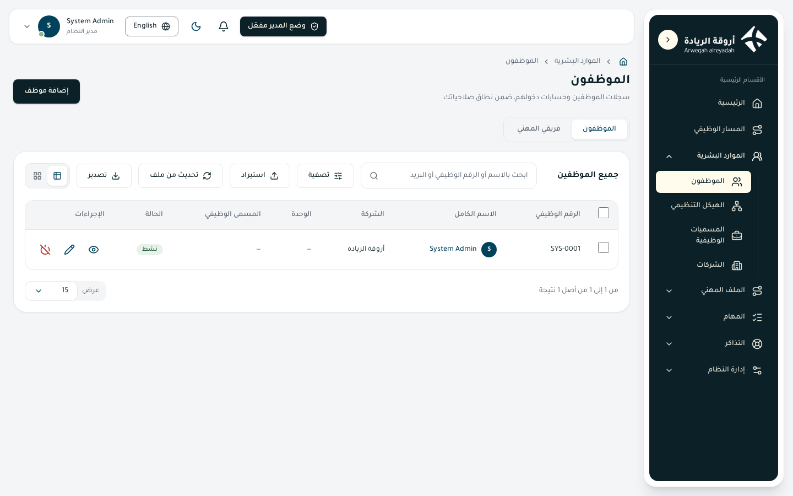
Who sees it
- View key:
employees.view(«View employees»). Scope: own, unit, unit and below, company or all. - The «Employee» role (everyone gets it automatically) holds it at scope «own»: an employee sees only their own record.
- The head role of a unit (made automatically for every unit of the structure) holds it at «unit and below», together with the employee history (placement and changes).
- HR roles and the System Admin role are set on the roles page; the HR roles start with no permissions until an administrator sets them.
- The page does not need «platform admin mode». Every button shows only for someone who holds its key.
- The «My career team» tab shows for whoever holds «View my team (colleagues of my unit)» (
directory.view) or «View «my career team»» (career_team.view), unless an administrator hid the page from the role.
What you can do
| Action | What happens | Key (label on the permissions page) |
|---|---|---|
| Add employee | Opens the two-step form; a sign-in account is created and an activation invitation is sent | employees.create (Add employees) |
| View (eye icon or click the row) | Opens the employee page | employees.view (View employees) |
| Edit (pencil) | Opens the form to change the fields you are allowed | employees.update (Edit employees) |
| Deactivate / Activate (power icon) | Stops the employee signing in and ends their sessions at once, or gives sign-in back | employees.deactivate (Deactivate and activate employees) |
| Sign in as the employee (icon) | An administrator works as the employee to see what they see | impersonation.start (Sign in as another employee) |
| Select several, then «Bulk edit» | Changes unit, job title, manager, work location, work mode or relation type for many | employees.bulk_update (Edit many employees at once), plus employees.assign_change when changing unit, title or manager |
| Export | Downloads the list (you choose scope, columns and file type) | employees.export (Export employees) |
| Import | Adds employees from an Excel or CSV file with a template | employees.import (Import employees from a file) |
| Update from file | Updates existing employees by employee number | employees.update (Edit employees) |
| Roles / Groups (on the employee page) | Sets the employee's roles or groups of roles | employees.assign_roles (Assign employee roles), employees.assign_groups (Give an employee groups of roles) |
| End contract | Records the end date and reason | employees.terminate (End an employee's contract) |
| Resend invitation | Sends a new activation link by e-mail | employees.resend_invite (Resend the activation link) |
| Reset authenticator app | Ends the employee's sessions and sends a link to link the app again | employees.reset_authenticator (Reset the authenticator app) |
| Change photo | Adds, changes or removes the employee's photo | employees.photo_update (Change an employee's photo) |
| «History» tab | Shows unit, job title and manager through time and the log of changes | employees.history_view (View an employee's history) |
| Cancel a waiting change (in History) | Cancels a change that waits for its day | employees.assign_change (Change an employee's unit, job title or manager from a date) |
| See ID, IBAN and salary | The values show instead of being hidden | employees.view_sensitive (View sensitive data) |
Above the list there is a search by name, number or e-mail, and filters: company, status, relation type, unit (after choosing a company), job title (after choosing a unit), contract type, nationality, gender, work mode, marital status, residency status, contract starts from / until, «ID expiring soon», «Contract ending soon», «Needs a unit». You can switch between the table and cards. Row actions are icons at the end of each row.
How to
Add a new employee
- Press «Add employee» at the top of the page.
- In the first step «Employee details» fill the sections: Work, Contact, Personal, Contract, Salary and cost, Notes. Required fields carry a star, and an error appears under the field as you type.
- Choose the company, then the unit, then the job title (a new employee needs a unit and a job title). The unit's manager is proposed as direct manager; you can change or clear it.
- Press «Next: roles». The «Employee» role and the role of the chosen job title are ticked from the start; untick them or add other roles (each role may have an optional last day). This step shows for people who may assign roles.
- Press «Save and send invitation». The sign-in account is created and the employee receives an e-mail with the activation link; they link the authenticator app with a QR code and get backup codes. The link works for 72 hours and only once.
Edit an employee or change their unit
- Open the employee's row and press «Edit».
- Fields you may not change are locked, with a note.
- When you change the unit, job title or manager the form asks for «Effective from» (today or a later day) and «Reason for the change». A later change waits for its day and then takes effect by itself; it shows in the «History» tab.
- Press «Save».
Bulk edit
- Select employees with the boxes at the start of each row (or the page box; limit 500).
- A bar «N employees selected» appears; press «Bulk edit».
- Choose the company (so its units are offered), then the values to change. What you leave empty stays as it is. To change unit, title or manager give «Effective from» and «Reason for the change». You can also tick «Remove the direct manager».
- Press «Preview»: you see «N would change» and «N would be refused» with the reason for each person. Nothing is saved in the preview.
- Press «Apply to N employees». One person's refusal does not stop the others.
Deactivate an account or end a contract
- To deactivate: press the deactivate icon on the row, or «Deactivate» on the employee page, and confirm. The employee can no longer sign in and their sessions end at once. You can activate it again later.
- To end the contract: open the employee page and press «End contract», choose the end date and the reason (write it if the reason is «Other»), then «Confirm end of contract».
Business rules
- Scope: a record outside your scope shows as if it does not exist (no «forbidden» message). (FR-06, FR-20)
- The work e-mail is the sign-in identity and Microsoft account and cannot change after adding. Only allowed domains are accepted (default arweqah.sa; the list is set in Settings → Security). (FR-77)
- Employee states: Active, Deactivated, «Needs a unit» (no unit or no job title). Badges: «Authenticator app linked / App not linked yet», «ID expiring soon», «Contract ending soon». (FR-72)
- Field checks: age from 18 to 70, phone in international format such as +966501234567, a Saudi IBAN (SA and 22 digits), the ID number checked by ID type and nationality, and an end date after the start date. (FR-17, FR-18)
- Sensitive data: ID number, IBAN and salary are encrypted and hidden for anyone without «View sensitive data», and never written to the audit log. (FR-21)
- Who edits what: the list of fields a holder of «Edit employees» may change belongs to each grant (a role, a group or a person) and is set with the «Fields they may change» button on the roles and permissions pages. A plain employee edits only work phone, personal phone, personal e-mail and the English name of their own record; any other field is refused. (FR-83, FR-94)
- The direct manager is optional. The «Leader of this unit» tick in the work section shows for those who may assign leaders. (FR-100)
- Deactivating ends sessions at once. Ending a contract: sign-in stays through the end date and stops the next day (a daily job just after midnight, Riyadh time), and the employee's open tasks go to their direct manager. (FR-55, FR-71)
- Reset authenticator app ends the employee's sessions and sends a new invitation. Resend invitation sends a new link (one per minute per address).
- History: every change of unit, job title or manager closes the previous value the day before it starts, and is kept with its reason and who made it. A change cannot start in the past. (FR-89, FR-90)
- Photo: JPEG or PNG up to 2 MB, cropped square with zoom and position before upload; when removed, the first letter of the name shows. (FR-91)
- «My team»: every employee sees only the colleagues of their own unit with basic details (name, photo, job title, e-mail, phone), not the units above or below; a manager of a colleague sees more about them. Someone without a unit sees a message explaining it. (FR-92)
- Bulk edit: at most 500 employees; each goes through the same dated-placement rules, and the platform is told once. (FR-93)
- Import: download the template (its drop-downs hold the system's lists), fill it, then the preview shows errors, only valid rows are imported, and an error report can be downloaded. Every row passes the same checks as the form. (FR-29)
- Update from file: a row is identified by employee number; the cells you fill are what changes and an empty cell leaves the record as it is; no new employee is made in this mode. A change of unit, title or manager takes effect today with the reason «Imported from a file». (FR-95)
- Sign in as an employee: off by default, switched on in Settings → Security; it needs platform admin mode. The administrator works with the employee's permissions without a code; everything done is recorded under the employee's name with the administrator beside it, and the employee gets a notice afterwards. Roles, security and account status stay closed. It ends with «Back to my account» or after an idle time. (FR-85)
Tips / common problems
- You only see your own record? That is the «Employee» role. Ask an administrator to widen the scope.
- A job title is missing from the filter? Choose the company, then the unit first; the lists follow each other.
- Badge «Needs a unit»: open Edit and choose the unit and job title.
- On a phone the table turns into one card per row.
10. Organization structure
The «Organization structure» page shows one tree for the whole group and all its companies: sectors, departments, sections, units and offices, with their leaders, job titles and headcount. What each company sees follows where its employees are placed. You can view it as a chart, a horizontal icicle, a table or cards, and choosing a unit opens its details beside the list.
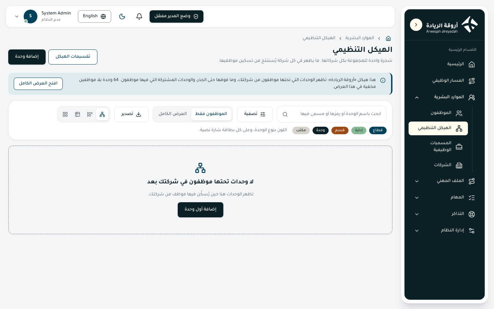
Who sees it
- View key:
org.view(«View the organization structure»). The «Employee» role holds it automatically at scope «all». - Every employee sees only their own company's structure: the units that have employees of their company under them, the units above them up to the top, and the shared units that have employees. A note says how many units are hidden (the ones without employees). (FR-98, FR-108)
- «See the whole structure» (
org.view_full) shows every unit even if empty, and adds the «Employees only / Full view» switch and the «Show me a company's structure» list. By the product design it is for HR and the platform admin, and is given on the roles page. - The buttons that change things (add, move, edit, delete and so on) show only in «platform admin mode» and only for someone who holds the key of each button.
- The head role of a unit does not list
org.viewbecause the general «Employee» role already holds it.
What you can do
| Action | What happens | Key (label on the permissions page) |
|---|---|---|
| Switch the view (chart / icicle / table / cards) | Changes how the structure is drawn; your choice is remembered | org.view (View the organization structure) |
| Search and filters | Search by unit name, code or a job title in it; filters: type, management type, status, employees, leader | org.view |
| Full view and «Show me a company's structure» | Shows every unit and compares it with what one company sees (faded with a dashed border = that company does not see it) | org.view_full (See the whole structure) |
| Export | Downloads the units with the columns you choose | org.export (Export units of the structure) |
| Structure divisions | Edits the unit types and the «who may be created under whom» table | org.levels_manage (Edit and copy the levels of the structure) |
| Add unit / Add a unit under it | Creates a new unit with a suggested code | org.unit_create (Add a unit to the structure) |
| Edit (pencil) | Changes the name, start date, manager and «The unit is working», with an effective date and a reason | org.unit_update (Edit a unit) |
| Set code | Sets once the code of a unit made before codes existed | org.unit_update |
| Change management type | Turns the unit between shared and per company, with a reason | org.unit_share (Change how a unit is managed) |
| Move | Moves the unit under another parent | org.unit_move (Move a unit) |
| Delete | Deletes a unit with nothing under it | org.unit_delete (Delete a unit) |
| «Leaders» tab: assign a leader or acting leader, end, delete | Manages the leaders of the unit | org.leaders_manage (Assign unit leaders and acting leaders) |
| «Charter» tab: write / edit | Writes the purpose, outputs, scope and limits | org.charter_edit (Edit the charter of a unit) |
| «Titles» tab: add and edit a title | Manages the unit's job titles | org.titles_manage (Manage job titles) and job_titles.create / job_titles.update |
There is no import on this page on purpose: the structure is built from the screen, and job titles are imported from the «Job titles» page.
How to
Read the structure
- Choose the view with the view switch. The chart starts with the group card open; the circle under a card opens what is below it, and the chart has «Open all», «Fit», zoom and drag.
- Card colors follow the unit type and every card carries a text badge with the type name, so meaning never depends on color alone.
- Click a unit and its details open with the tabs: Overview, Titles, Leaders, Charter, History.
Add a unit
- Switch platform admin mode on, then press «Add unit» (or the «Add a unit under it» icon on the parent's row).
- Choose the parent, then the type; the types offered are those the rules table allows.
- Write the Arabic name (English is optional and is translated as you type) and the start date.
- Under the top (a sector, department or office) write the unit code: three capital English letters such as OPS.
- Choose the management type: «Inherited from the parent», «Shared» or «Per company» (a sector and anything directly under the group needs an explicit choice). The suggested code and a note on which companies will see the unit are shown.
- Press «Save the unit».
Change the management type
- Press the «Change management type» icon on the row.
- Read the impact shown (the manager of employees of the subsidiary companies changes).
- Write the reason and press «Confirm the change». The affected units and the number of employees whose manager was recalculated are shown.
Assign a leader or an acting leader
- Open the unit, then the «Leaders» tab, and press «Assign a leader or acting leader».
- Choose the kind (leader or acting leader), the company (for a per-company unit), the employee, their job title in the unit, the «Starts from» date and the reason.
- An acting leader needs an end date too. Save.
Business rules
- Unit types: five built-in types that cannot be removed (sector, department, section, unit, office); the platform admin can add more from «Structure divisions» (Arabic and English names, and the «Accepts titles and employees» tick). An added type shows in every company and can be removed only while no unit uses it. A sector never takes titles or employees. (FR-96)
- Who may be created under whom: a table of tick boxes (parent in the row, child in the column) edited from «Structure divisions». Changing the table only stops new creation; it never moves existing units. Two rules are fixed: a sector is created only under the group, and no office under an office. (FR-96)
- The unit code is built by unit type in four slots (sector.department.section.unit) such as
OPS.03.03.01; a zero in a slot means there is no level of that type here. An office takes number 09 in the slot where it sits, and an added type takes the unit slot. The code does not change when the unit is moved. If no slot is free the message «No code slot is free for this type under this parent» appears. A unit made before codes gets its code once. (FR-96) - Management type: «Shared» is managed once from Arweqah and the leader of the unit manages any employee under it; «Per company» means each company has its own leader and employees. It can be marked on any level and what is below inherits it unless a unit under it is marked differently. Changing it needs a reason and is audited. (FR-97)
- When a unit shows: a shared unit shows to all companies once the first employee of any company is placed in it; a per-company unit does not show in a company's structure until its first employee is placed. Someone with «See the whole structure» always sees it. (FR-98)
- Leaders: a shared unit has one leader from the group company; a per-company unit has a leader for each company from its own active employees. An acting leader holds the leader role only for their term, needs an end date and a leader in force for the whole term, cannot be the leader, and cannot overlap another acting leader. A leader starts today or later, and only a leader who has not started can be deleted (one in force is ended). When a leader is given a job title in the unit, they move to the unit with that title from the start day. The «unit leader» role is one role, not tied to a company. (FR-100)
- A unit with employees and no leader in their company shows the status «No leader», with a yellow notice for holders of the full view and a «Show them» button. The manager then goes up to the nearest leader above in the same company; if there is none the manager stays empty. (FR-100)
- Charter and history: the charter (purpose, outputs, in scope, out of scope, limits) is edited with an effective date and a reason. An edit today does not change yesterday's record; a change that starts later is kept as a «scheduled» version, applied by itself on its day, and the unit shows «Scheduled change». A change cannot start in the past or on a date that does not follow the last version. A unit is stopped by a date instead of being deleted. (FR-99)
- Move: immediate and audited, and the code stays the same; only places the rules allow are offered, and a sector cannot be moved. A department with an active ticket desk or open tickets cannot be moved or deleted.
- Delete: a unit with sub-units or employees cannot be deleted; move or remove them first. Its job titles are deleted with it.
- The start date is required for every unit, from 1980 up to two years ahead. (FR-35)
- Every change to the structure is recorded in the history with the date, who made it and the reason.
Tips / common problems
- You do not see the edit buttons? Switch «platform admin mode» on from the top bar and check your role holds the key.
- A unit does not show for you? It may still have no employees of your company; holders of «See the whole structure» see it.
- A missing code on an old unit: use the «Set code» icon; it will not change afterwards.
11. Job titles
The «Job titles» page gathers every job title of the group in one list with its code, grade, track and headcount. Click a title to open its «card»: the code broken into its parts, the development stage, the duties, qualifications and indicators, the holders in each company, and the «Who is the direct manager?» chain.

Who sees it
- View key:
job_titles.view(«View the job titles page and their cards»). Scope: all. - The page is not part of the default «Employee» role or of the unit head role; it is given to a role from the roles or permissions page (for example HR and the System Admin).
- You see the titles of the units whose structure you see (the same rule as the structure page); holders of «See the whole structure» see all. The headcount is counted for your company, and for every company in the full view.
- The add, edit and delete buttons show in «platform admin mode» and for whoever holds each button's key. Export and import have their own keys.
What you can do
| Action | What happens | Key (label on the permissions page) |
|---|---|---|
| Open the card (click the row or name) | Shows the title card | job_titles.view |
| Search and filters | Search by name or code; filters: sector, department, section, grade, track, vacancy | job_titles.view |
| Table / cards switch | Changes how the list is drawn | job_titles.view |
| Add title | Chooses the unit, then the name, grade, track and the title it reports to | job_titles.create (Add a job title) |
| Edit | Changes the name and the reporting title, and sets grade and track once | job_titles.update (Edit a job title) |
| Edit the content | Writes duties, qualifications and indicators | org.titles_edit_content (Edit the content of a job title) |
| Delete | Deletes a title nobody holds | job_titles.delete (Delete a job title) |
| Export | Downloads the titles of the current search and filters | job_titles.export (Export job titles) |
| Import | Adds or updates titles from a file | job_titles.import (Import job titles from a file) |
How to
Add a title
- Switch platform admin mode on and press «Add title».
- Choose the unit (only units that accept titles are listed), then «Next».
- Write the Arabic and English names, choose the grade (L1 to L9), the track (Management, Professional, Projects, Advisory, Support) and, optionally, the title it reports to. You may add more than one title to the unit in the same dialog, and choose which role the permissions are copied from (default: the «Employee» role).
- Save. The title code is built and a role named after the title is made.
Read a title card
- Click the title's row.
- «Meaning of the code» breaks the code into sector, department, section and unit, then the grade and track, then the sequence.
- «Who is the direct manager?»: choose the employee's company (among the companies that have holders of the title) and the chain from the title upward appears.
Import titles
- Press «Import» and download the template: title code (empty for a new title), unit code, the two names, grade, track, reporting-title code, and the duties, qualifications and indicators in Arabic and English (one item per line).
- Fill the file and upload it, then read the preview: «New titles / Updated / Unchanged» and the rejected rows with their reasons.
- Confirm the import (limit 1000 rows).
Business rules
- The title code looks like
OPS.03.03.01-L7P-01: the unit code, then the grade (1 to 9) and a track letter (M management, P professional, J projects, C advisory, S support), then a sequence inside the unit. It is built when the title is added, and is never changed or reused. (FR-104) - Grade and track are set once and then locked because the code is built from them. A new title needs a grade and a track. Older titles without a code keep working; their code is built when grade and track are set. A title added to a unit with no code waits for the unit's code. (FR-104)
- No title on a sector. A title never reports to itself or to a title that reports to it. (FR-104)
- Development stage is derived from grade and track: Foundation, Specialization, Mastery, Operational leadership, Institutional leadership, with the yearly hours and the budget limit; where there is no rule the card says «HR decides it» and nothing is guessed. (FR-107)
- The direct manager is the nearest title above that has a holder; vacant titles are skipped, and the search never goes beyond the employee's company. If there is none, the employee enters the report of units without a leader and HR assigns the manager by hand with a date and a reason. (FR-107)
- Content: saved in Arabic and English, one item per line (up to 30 items, 400 characters each); every save raises the content's version number and is audited. (FR-106)
- Delete: a title that has employees cannot be deleted; move them first. Its role is deleted with it.
- Import: a row is matched by code (update, or create with exactly that code) or the code is built from unit, grade and track; reporting lines are linked. A row is refused with a clear reason (unit not found, unit does not accept titles, duplicate code, sequence taken, unknown reporting title or one that makes a loop...). Nothing is written before you confirm. (FR-107)
- «Vacant» means a title with no holders; the «Vacancy» filter separates the two cases.
Tips / common problems
- No «Add title» button? Switch platform admin mode on and check the add key.
- A unit is not in the add list? Its type does not accept titles (such as a sector); add the title in a unit below it.
- The import says «The unit has no code yet»: set the unit's code on the structure page first.
12. Companies
The «Companies» page shows the companies of the group with each company's code, Arabic and English names, headcount and status. From here the platform admin adds a company, edits it, deletes it if it has no employees and no units, and imports or exports companies.
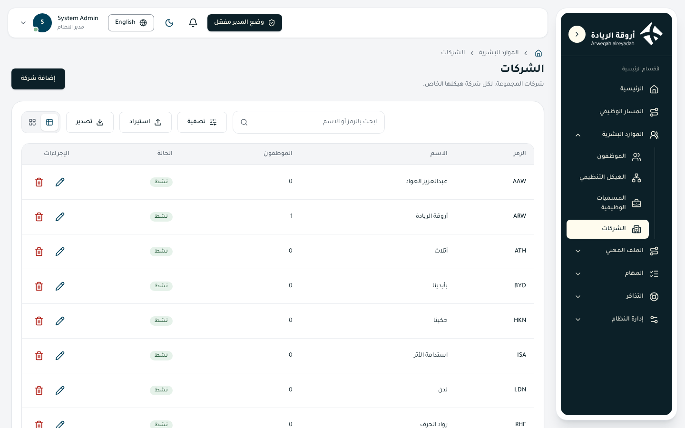
Who sees it
- View key:
companies.view(«View the companies page»). - The page needs «platform admin mode»; it does not show in the side menu outside it. It is not part of the default Employee or unit head roles, and is given from the roles page (to the System Admin and whoever they choose).
- Every button has its own key and shows only for whoever holds it.
What you can do
| Action | What happens | Key (label on the permissions page) |
|---|---|---|
| Search and filters | Search by code or name; status filter (active / inactive) and «Has employees / No employees» | companies.view |
| Table / cards switch | Changes how the list is drawn | companies.view |
| Add company | Opens the add form | companies.create (Add a company) |
| Edit (pencil or click the row) | Edits the code, the two names and the status | companies.update (Edit a company) |
| Delete (bin) | Deletes the company after a confirmation | companies.delete (Delete a company) |
| Export | Downloads the companies (scope, columns, file type) | companies.export (Export companies) |
| Import | Adds companies from an Excel or CSV file | companies.import (Import companies from a file) |
How to
Add a company
- Switch platform admin mode on and open «Companies».
- Press «Add company».
- Write the code (English letters, digits and hyphen, 2 to 20), the Arabic and English names, and keep «Active company» ticked if you want it active.
- Save. A new company starts with the default levels (sector, department, section, unit).
Delete a company
- Press the delete icon on the company's row.
- Confirm in the window. If the company has employees or units the system refuses; move or remove them first.
Import companies
- Press «Import», then «Download template».
- Fill the columns: Code, Arabic name, English name (required) and Status (yes / no, default yes).
- Upload the file and read the preview (valid rows and rows with errors), then press «Import N rows». Only valid rows are imported, and you can download the error report.
Business rules
- A company code is unique; using an existing one is refused with «Company code is already used». (FR-19)
- A company with employees or units cannot be deleted: «Move or remove the company's employees and units first». (FR-19)
- Import: every row passes the same checks as the form, duplicates inside the file are flagged, and a row with an error is never imported. (FR-29)
- Export: you choose the rows (those shown on the page or all results of the search and filters), the columns (code, both names, employees, status) and the file type (Excel or CSV).
- The organization structure is one for the group; what each company sees of it follows where its employees are placed (see the Organization structure section).
- Editing and deleting are recorded in the audit log.
Tips / common problems
- You do not see «Companies» in the menu? Switch platform admin mode on.
- The employees column is zero but the company cannot be deleted? It may still have units.
Career file
13. My career path
«Career path» is your own page. It shows the path of your job title in five sections, always in the same order: job description, performance evaluation, career development, learning plan and what is required of you. From here you also send proofs of the learning units you finished, follow your badges and your learning hours, ask for learning outside the plan, and (in the cycle) evaluate yourself. HR prepares the content once for each title; you read it and acknowledge it.
Who sees it
- View permission:
career_profile.view(View my career path), scope: all (it only ever shows your own path). - Default roles: the Employee role (given to everyone) and the head role of every unit hold it, together with the keys of your own path listed below.
- It does not need platform admin mode.
- The link «Career path» sits right under «Home» in the side menu. If HR has not set the path of your title as ready, you see the card «Your career path is not ready yet» instead of the content, and the link appears as soon as it is ready.
What you can do
| Action | What happens | Permission key (label) |
|---|---|---|
| Open the page and read the five sections | Shows the path of your title, your progress cards and your acknowledgement | career_profile.view (View my career path) |
| Acknowledge the path | Records your acknowledgement with your name, the content version and the date | career_acknowledge.create (Acknowledge my career path) |
| Export the learning units | Downloads the table of units of your learning plan (scope, columns, file type) | career_learning.export (Export the learning units of my path) |
| Send a proof / Send again | Opens the proof dialog for a unit and sends it for approval | career_learning.upload (Send a proof for a learning unit) |
| Tick «Done» on a required item | Marks the item as done in the «Required» section | career_required.tick (Mark a required item as done) |
| Request learning outside the plan | Opens the learning request dialog (see the page «Development requests») | career_requests.create (Send a development request) |
| Self-evaluation, my result, objection and milestones | Appear in the evaluation section when a cycle is open (see the pages of the evaluation cycle and the team evaluation) | performance.self_evaluate (My self-evaluation in the evaluation cycle), performance.object (Object to the result of my evaluation), performance.export (Export a copy of my evaluation result), performance.milestone_ack (Acknowledge reading the minutes of my milestone) |
The page at a glance
- Identity card: your name, your job title, your unit, your direct manager, the title code split into badges (sector, department, section, unit) and your development stage (Foundation, Specialization, Mastery, Operational leadership, Institutional leadership), which comes from your grade and track.
- Header badge: «You acknowledged content version N».
- Progress cards: learning units done («X of Y»), hours done with the next medal, the budget spent against the cap of your stage, and the core competencies of your level that are met.
- Five sections: job description (summary, performance indicators, the governing indicator and responsibilities with their tasks) · performance evaluation · career development (career ladder, level path, technical competencies) · learning plan (learning units, badges, my requests) · required (items with dates, then the acknowledgement text). The learning plan tab shows a counter of done units and «Required» shows a red counter of late items.
- Career ladder: a rising staircase with the mark «You are here» and the next level; below it the condition to move up.
- Level path: the steps of the level, each with its kind of proof (course, certificate or applied at work) and its state.
- Technical competencies: a table of competencies against levels («Basic», «Expert» or «—» when the level does not ask for it) with a column «My level».
How to
Read and acknowledge the path (first sign-in, new title, or reopened by HR)
- Sign in. A full screen shows only your path, with the reason: «This is your first sign-in», «Your job title has changed» or «HR reopened the acknowledgement». Sign out is always available.
- Read the first section. The button «Next: <section>» stays off until you scroll to the end of the section; a short section counts as read at once.
- Press «Next» for each of the five sections in order. A section not yet reached is locked, and «Previous» takes you back to a section you read.
- At the sixth step, «Acknowledgement», tick the box in the bar at the bottom (it stays off until you reach this step) and press «Acknowledge and continue».
- You get the message «Acknowledged. You can keep using the platform.» and the platform opens.
Send a proof for a learning unit
- Open «Learning plan», then «Learning units», and find the unit.
- Press the upload icon on the row («Send a proof»), or «Send again» if it was rejected.
- Choose the kind of proof: Certificate (a PDF or image, up to 10 MB), Applied at work (your direct manager approves it after you describe what you applied) or Written output (a summary or report you produced).
- Attach the file (a certificate without a file is refused: «Attach the certificate file first»), add an optional note for the reviewer and press «Send for approval».
- The state of the unit becomes «Waiting for approval». The hours count only after approval.
Follow your badges and hours
- Open «Learning plan», then «Badges».
- Each badge shows its threshold in hours, your progress bar and whether you reached it; the card on top shows the next medal and how many hours are missing.
Mark a required item as done
- Open «Required».
- Tick «Done» on the item. Items with a date show «Overdue», «In N days» (orange within 30 days) or «While you are in the period».
Business rules
- Acknowledgement is required when you have not acknowledged the title you hold now (first sign-in, or your title changed since your last acknowledgement) or when HR reopened it after your last acknowledgement (FR-112).
- While the acknowledgement is pending, the rest of the platform is locked: every link in the side menu is disabled with the tooltip «read and acknowledge first», and a notice at the top says why. Only your path, sign-out and the account menu stay available.
- You must read before you acknowledge: the five sections are read in order; «Next» works only after scrolling to the end of the section; the acknowledgement box is off until the sixth step. Scrolling guarantees that you passed through the page, not that you read it. If the content changes while you read, the page asks you to reload and read the new version.
- A session where an administrator signs in as you is never held back and cannot acknowledge for you.
- The acknowledgement is recorded with your name, the content version and the date. When HR changes the content, its version goes up.
- The content comes from the title, not from you: you cannot edit it. The path is shown only when HR set it «Ready».
- Learning units count once: a unit approved stays yours if you move to a title that includes it. Hours count only after approval (FR-114).
- A proof is one record per unit: a proof waiting or approved is not replaced; a rejected proof is replaced by a new one («Send again»), and the page shows the reason of the rejection. After the third rejection of the same unit your direct manager is told.
- Applied at work goes first to your direct manager and its decision is final.
- Badges have thresholds in hours set by HR in the title; a badge is reached when your approved hours reach its threshold.
- Learning outside the plan is approved by cost: direct manager, sector head, then the CEO (see the page «Development requests»).
- A reminder is sent to you when you have dated required items that are late.
- The evaluation section explains that evaluation belongs to your development stage, not to the title; weights, criteria and grade scale show when a cycle opens. Scores are never shown before the individual notification after approval (FR-119).
- The lists on the page (learning units, my requests) have search and filters (priority, language, state), the table / cards switch and export.
Tips and common problems
- «Next» does not work: scroll to the very end of the section; if the section has sub-tabs, a hint lists the tabs you still have to open.
- The box of the acknowledgement is off: you have not reached the sixth step yet.
- «Your career path is not ready yet»: HR has not set the path of your title as ready. Ask HR.
- A unit shows «No link yet»: HR has not added the learning link for it yet.
- The proof was not sent: check that a certificate has its file, and that the type is PDF, PNG or JPEG up to 10 MB.
14. My career team
«My career team» shows managers the career paths of the people under them: how much of the mandatory and necessary learning they finished, their approved learning hours and what they are late in. It is a view for follow-up: you do not edit anyone's path here. You decide here only a proof that was referred to you, and you record the level a team member reached in a technical competency.
It is not a page of its own any more: it is the tab «My career team» of the Employees page (the old link to «My career team» takes you there).
Who sees it
- View permission:
career_team.view(View «my career team»), scopes: unit, unit and below, company, all. The default scope is unit and below. - Default roles: the head role of every unit (made automatically from the structure) holds the view, decide and export keys at «unit and below». The Employee role does not hold them.
- It does not need platform admin mode.
- With the key
directory.viewas well, the table adds the columns unit, company, work e-mail and work phone. Withdirectory.viewonly (no career key) the tab shows only the colleagues of your own unit. - A person outside your scope does not exist for you: the system answers as if the record was not found.
What you can do
| Action | What happens | Permission key (label) |
|---|---|---|
| Open the tab, search and filter | Lists the people in your scope with the numbers of their path; search by name; filter by state (regular, late) | career_team.view (View «my career team») |
| Open a member (eye icon or a click on the row) | A window with three cards (mandatory and necessary done, approved hours, late items), the proofs waiting for a decision and the competencies of the title | career_team.view (View «my career team») |
| Approve a proof referred to you | The proof becomes approved and its hours count for the employee | career_team.decide (Decide a proof referred to the direct manager) |
| Reject a proof referred to you | Rejects it with a reason (at least 5 characters); the employee is told | career_team.decide (Decide a proof referred to the direct manager) |
| Record a competency level | Records «Basic» or «Expert» for a competency of the member's title, or takes the record back | career_competency.record (Record a competency level for a team member) |
| Export the list | Downloads the table (scope, columns, file type) | career_team.export (Export the «my career team» list) |
How to
See who is late
- Open Employees, then the tab «My career team».
- If some people are late, a warning on top says «N of your team are late in what is required».
- Filter the state by «Late», or read the column «Late» (a red number of late items).
- Click a row to open the member and see what is late.
Decide a proof that was referred to you
- Open the member. The list «Proofs waiting for a decision» shows the proofs.
- Only a proof referred to the direct manager can be decided here (the work applications of your team, or a proof the reviewer referred).
- Press «Approve», or press «Reject with a reason», write the reason (5 characters at least) and confirm.
Record a competency level
- Open the member and go to «Competencies of the title».
- For each competency the title asks for, choose the recorded level («Basic» or «Expert»). The employee sees it in the column «My level».
- To undo, press «Take back».
Business rules
- Only the direct-manager chain sees the career file of a person: a person outside your unit and below is not shown (FR-115).
- Read only: «you do not edit their career file from here». The only decisions here are on proofs referred to you and the competency levels.
- Progress columns: the share of mandatory and necessary units done (a bar), approved hours out of the hours of the year, the number of late items and the state: Regular, Late or No ready path (the person's title has no ready path; such people are left out of the list).
- Late means a required item with a date that is past and not ticked by the employee.
- A work-application proof starts with the direct manager and the manager's decision is final. After the third rejection of the same unit the manager is told.
- A competency counts as met when the level you recorded is at least the level the title asks for in the employee's current level. Levels are recorded by hand: approving a proof does not set them (FR-117).
- Approved hours count only after approval, a unit once.
- The list has search, a state filter, the table / cards switch and export; the number of rows follows your scope.
Tips and common problems
- The tab is missing in Employees: your role holds neither
career_team.viewnordirectory.view, or the page was hidden for your role. - Someone you expect is not in the list: they are outside your unit and below, or their title has no ready career path.
- The contact columns are missing: they need the key
directory.viewtoo.
15. Certificate review
«Certificate review» is the page where the proofs that employees sent for the units of their learning plan are decided. You open a proof, look at the file and the unit, then approve it (its hours start to count), reject it with a reason, or refer it to the employee's direct manager. It is for the reviewer of learning proofs, normally the employee development officer.
Who sees it
- View permission:
career_certificates.review(View the certificate review page and its files), scope: all. The review scope is all employees; it is not narrowed by unit. - Default role: Employee development officer (made once by the platform when it does not exist yet, with the five certificate keys). The platform manager can add the keys to any other role or person from the permissions page.
- It does not need platform admin mode for the officer role.
- Menu: the group «Career file», item «Certificate review».
What you can do
| Action | What happens | Permission key (label) |
|---|---|---|
| Open the page, search and filter | Lists the proofs; search by employee or unit; filters: kind of proof (certificate, applied at work, written output) and state | career_certificates.review (View the certificate review page and its files) |
| Open the proof (eye icon or a click on the row) | A review window: the employee, the unit, the kind of proof, the hours that will count, the date sent, the file with an open button and the note of the employee | career_certificates.review (View the certificate review page and its files) |
| Approve (check icon) | The proof becomes approved and the hours of the unit count for the employee | career_certificates.approve (Approve the proof of a learning unit) |
| Reject with a reason (X icon) | The proof is rejected, the reason is saved and the employee is told | career_certificates.reject (Reject the proof of a learning unit with a reason) |
| Refer to the direct manager (arrow icon) | The proof goes to the employee's direct manager to decide | career_certificates.refer (Refer a proof to the direct manager) |
| Export the list | Downloads the list (scope, columns, file type) | career_certificates.export (Export the list of certificates) |
A button you do not hold the key for is hidden; the approve, reject and refer buttons show only on a proof that can still be decided.
How to
Approve a proof
- Open «Certificate review». The page says «You review the proofs of every employee here».
- Search by the name of the employee or the unit, or filter by the kind of proof or the state.
- Click the row to open the proof. Read the details and press «Open the file» to see the certificate.
- Press «Approve». You get «The proof was approved.» and the hours of the unit count.
Reject a proof
- Open the proof, or press the X icon on its row.
- Write the reason (at least 5 characters). The window says how many times this unit was rejected before.
- Press «Reject the proof». The employee is told, sees the reason on the unit and can send a new proof.
Refer a proof to the direct manager
- Open the proof that is waiting for approval.
- Press «Refer to the direct manager». The state becomes «With the direct manager».
- The manager decides it from «My career team». You can still decide it yourself if you need to.
Business rules
- Proofs and who decides (FR-114): a proof is one record per employee and per learning unit. A certificate and a written output start with the reviewer. An applied at work proof starts with the employee's direct manager, and the manager's decision is final.
- States of a proof: not started, waiting for approval, with the direct manager, done, rejected.
- Hours count only once approved, and a unit counts once for the employee.
- A rejection needs a reason of at least 5 characters; the employee reads it. A rejected proof is replaced by the next one the employee sends; the number of rejections is kept.
- After the third rejection of the same unit the employee's direct manager is told.
- A decision taken by someone else meanwhile is refused: the page says «The decision could not be made: someone else may have decided it. Refresh the page.»
- A proof of a unit that was removed from the plan shows «A unit no longer in the plan».
- The name of whoever decided and the time are saved with the proof.
- The review scope is all employees for now; narrowing it is not offered.
- Like every list, the page offers the table / cards switch, search, filters and export.
Tips and common problems
- The list is empty: «No proofs are waiting for review» means nothing was sent or everything was decided.
- The approve button is missing on a row: the proof was already decided, or your role lacks the key.
- You see the page but cannot approve: your role holds the view key only. Ask the platform manager for the approve and reject keys.
16. Development requests
A development request is a request for learning that is not simply a unit of your plan, for example a course at another provider, with its cost. The request goes to the right approver by its cost: the direct manager, the sector head or the CEO. Employees send requests from their learning plan; approvers decide them on the page «Development requests».
Who sees it
- Sending a request (employee):
career_requests.create(Send a development request), scope: all. Held by the Employee role; the button «Request learning outside the plan» is in «Learning plan». The employee follows the requests in «Learning plan», then «My requests». - The approvers' page: view permission
career_requests.view(View the «development requests» page), scopes: unit, unit and below, company, all; default unit and below. The head role of every unit holdscareer_requests.view,career_requests.approve,career_requests.rejectandcareer_requests.exportat «unit and below». - It does not need platform admin mode.
- Menu: the group «Career file», item «Development requests».
What you can do
| Action | What happens | Permission key (label) |
|---|---|---|
| Send a request | The dialog «Learning request» sends a request for approval; the approver is shown before you send | career_requests.create (Send a development request) |
| Follow my requests | The list «My requests» with search, filters and a details window | career_profile.view (View my career path) |
| Open the page, search and filter | Two views: «Waiting for me» and «All requests»; search by employee or course; filters: state, approver, in or outside the plan | career_requests.view (View the «development requests» page) |
| Open a request (eye icon or a click on the row) | A window with the course, cost, plan, approver, state, dates, the retention agreement file and a warning if the cost is above the budget left | career_requests.view (View the «development requests» page) |
| Approve (check icon) | The request is approved and its cost counts in the budget spent of the employee | career_requests.approve (Approve a development request) |
| Reject (X icon) | The request is rejected with a reason and the employee is told | career_requests.reject (Reject a development request with a reason) |
| Export the list | Downloads the requests (scope, columns, file type) | career_requests.export (Export the list of development requests) |
The approve and reject icons appear only on a request that is with you.
How to
Send a learning request (employee)
- Open «Career path», then «Learning plan» and press «Request learning outside the plan».
- Write the course name and its cost in riyals (a whole number).
- Choose «In the learning plan» (a unit of your plan you want at another provider) or «Outside the plan».
- Optionally attach the retention agreement for funded training (PDF or image).
- Check the line «Decided by» and the approver name that appear at once, and the budget left. Press «Send the request».
Decide a request (approver)
- Open Development requests. The tab «Waiting for me» lists what is with you.
- Click a request to read it. Check the cost, the plan kind and the budget warning.
- Press «Approve», or press «Reject», write the reason (at least 5 characters) and confirm. The employee is told.
Business rules
- Who decides by cost (FR-116): in the plan and up to 5,000 riyals the direct manager; outside the plan or from above 5,000 up to 20,000 the sector head; above 20,000 the CEO. The dialog shows who decides and why as soon as you type the cost.
- The approver is chosen when the request is sent: the direct manager of the employee, the head of the sector above their unit, or the CEO (the head of the office directly under the group). If nobody holds the post, or the holder is the employee, the request goes up to the next level; if nobody holds any higher post the request is refused with the message «Nobody holds the approver post yet: ask HR to set the unit leader.»
- The direct manager has 7 days (about 5 working days); after that the request goes up to the sector head, who and the employee are told.
- You decide only what reaches you: a request with another approver is shown read only («The request is with another approver and you see it read only»). Someone outside your scope does not see the request.
- Approve or reject only, with a reason for rejection of at least 5 characters; the decision closes the request and the employee reads the reason. If someone decided it first, you get «The decision could not be made».
- The budget is a warning, never a block: the cap is the one of the employee's development stage; the spent amount is the cost of the requests approved in the current calendar year (Riyadh). If the cost is above what is left, the dialog warns and the lists show «Above the budget left»; the approver decides. If the stage has no cap, nothing is compared.
- The retention agreement is optional and is seen by the approver.
- States: waiting for a decision, approved, rejected. Plan kinds: in the plan, outside the plan.
- Both lists offer search, filters, the table / cards switch and export.
Tips and common problems
- The button «Request learning outside the plan» is missing: your role lacks
career_requests.create. - The request is refused at sending: nobody holds the approver post above you; ask HR to set the leader of the unit.
- The page is empty: «There are no development requests yet» or nothing is with you; try «All requests».
17. Career-path content
«Career-path content» is the HR page that prepares the career path of each job title. The job titles are listed with the state of each one's path. For a title you upload its title file (one file with the job description, the career development, the learning plan and the required items), review what the system read from it, fix details by hand, then set the path Ready so that the people holding the title see it and are asked to acknowledge it. The page also reopens the acknowledgement, imports the learning links from an Excel file and exports the list.
Who sees it
- View permission:
career_content.view(View the career-path content), scope: all. - Default roles: none of the standard roles holds it except the Administrator. The platform manager gives it, with the keys below, to the HR role from the permissions page. Administrative permissions that wait for platform admin mode work only while the mode is on.
- Menu: the group «Career file», item «Career-path content». The Employee role does not see it.
What you can do
| Action | What happens | Permission key (label) |
|---|---|---|
| Open the page, search and filter | The titles as a column of buttons (name, code, state); search by title or code; filters on unit, grade, track and path state | career_content.view (View the career-path content) |
| Edit a path by hand | The workspace of the title (seven tabs): description, ladder and path, technical competencies, learning plan, required, evaluation, shared lists; «Save changes» raises the content version. Without the edit key the workspace is read only | career_content.edit (Edit the career-path content of a job title) |
| Preview the path (eye icon) | Shows the path as the holders of the title see it, without a name, progress or acknowledgement | career_titlefile.preview (Preview a career path as the employee sees it) |
| Upload the title file | Opens the dialog «Upload the title file»: choose a txt, docx or pdf file or paste its text, press «Extract», review, then «Save the extracted content» | career_titlefile.upload (Upload a title file and read the career path from it) |
| Analyse with AI | Offers the AI to place the parts of a file the fixed reader could not | career_titlefile.ai (Analyse a title file with AI) |
| Set the path ready / Set back to draft | Shows the path to the holders (and asks them to acknowledge), or hides it again | career_titlefile.publish (Set a career path ready or back to draft) |
| Reopen the acknowledgement for its holders | Asks every holder of the title to acknowledge the path again, with a reason | career_acknowledge.reopen (Reopen the acknowledgement of a career path for a title's holders) |
| Import learning links | Imports an Excel file of learning links (title code, period, unit, link) | career_content.import (Import learning-unit links from a file) |
| Export the list | Downloads the list of titles and the state of their paths | career_content.export (Export the list of titles and the state of their paths) |
How to
Build the path of a title from its file
- Open Career-path content and click the title in the list. The panel shows its name, code, content version and state.
- Press «Upload the title file». Choose a txt, docx or pdf file (it is read in your browser) or paste the text (up to 200,000 characters).
- Press «Extract». The table shows each part (job description, career development, learning plan, required) as «Sound» or «Needs review», with counts (indicators, responsibilities, ladder levels, learning units, learning minutes...) and the reader's notes; text that is not content (such as «Next», «Back», «Print») is skipped and listed.
- If everything is sound, press «Save the extracted content». The content version goes up. Saving stays off while any part needs review.
- If the reader could not place the parts, use «Analyse with AI» (see the rules), review the result in the same table, then save.
Set the path ready for its holders
- Open the title. The panel lists what is missing, or says «Every part is complete: the path can be set ready».
- Press «Set the path ready». The window says how many holders will see it and be asked to acknowledge.
- Confirm. The holders see the path and read it on their next sign-in.
- To hide it, press «Set the path back to draft»: nothing the people acknowledged is deleted.
Reopen the acknowledgement
- Open the title and press «Reopen the acknowledgement for its holders (N)».
- Write a reason (at least 5 characters) and press «Confirm».
- The holders must acknowledge again when they sign in, and cannot use the platform before.
Import learning links
- In the page header press the import button and choose the Excel file (download the template first; it has the columns «Title code», «Period», «Unit name», «Link»).
- Review the preview: how many units will get a new link and how many stay as they are; each refused row shows its number and its reason.
- Confirm. The content version of the titles changed goes up.
Business rules
- One file per title: description, development, learning plan and required items; the performance evaluation is not in this file because it belongs to the development stage and is uploaded once from the evaluation cycle page (FR-113).
- Nothing is saved before you review it, and a file with a part that needs review is not saved. The checks include: missing summary, indicators or responsibilities; a ladder without a marked current title; missing level-path steps, condition to move up, competencies, learning units, badges or required items or acknowledgement text; a learning period whose total does not match its units; a title code in the file that is not this title's code; and text over a limit or a duration nobody can read.
- A path can be set ready only when it is complete (description, development, learning plan with at least one unit and one badge, required items and the acknowledgement text). A draft may be saved incomplete, but never with a link that does not start with
https://or a period without a name. - Ready or draft: the holders of a title see the path only when it is ready; back to draft hides it without deleting what they acknowledged.
- Content versions: every save raises the version, and the acknowledgement of an employee records the version. If someone else changed the content after you opened it, your save is refused («Close the window, open it again and redo your edit»).
- AI reading (FR-126, FR-127): the fixed reader always comes first and is free. The button «Analyse with AI» shows only when an AI service is switched on in the settings and you hold the AI key. Nothing is sent unless you press it, and the text of the file (company data, not employees' data) goes to that service. You review the result before anything is saved; texts that are not in the file word for word are listed to be checked. Durations and dates are always computed by the system. Up to 6 analyses per hour per person.
- Reopening needs a reason and is recorded in the audit log.
- Learning links must start with
https://; an empty link clears it. A row is refused when the title code or the period or the unit is not found, the unit name is repeated in the period, or the row repeats a unit already named above. - Audit: uploads, AI analyses (without the text of the file), saves, ready and draft changes and reopenings are recorded.
Tips and common problems
- «Save» is off: extract the file first, or fix the parts listed under «Parts that need review».
- «The text could not be read»: try pasting the text of the file.
- The path cannot be set ready: the panel names the missing parts.
- You see the workspace but cannot edit it: you do not hold
career_content.edit.
18. Evaluation cycle
«Evaluation cycle» is the HR page that runs the yearly performance evaluation. The fiscal year runs from April to March. HR uploads the evaluation file (the template of each of the five development stages, the grade scale and the fiscal-year card), checks that the cycle is ready, opens it, moves it from stage to stage by its dates, keeps the catalog of the extra component and the automatic reminders, and closes it at the end.
Who sees it
- View permission:
performance.cycle_view(View the «evaluation cycle» page), scope: all. - Default roles: none of the standard roles holds it except the Administrator; the platform manager gives it, with the keys below, to the HR role from the permissions page. Administrative permissions that wait for platform admin mode work only while the mode is on.
- Menu: the group «Career file», item «Evaluation cycle».
- Before the cycle opens the page is in view mode; employees see «The evaluation cycle has not been opened yet» in their own page.
What you can do
| Action | What happens | Permission key (label) |
|---|---|---|
| Open the page and read the stages, dates and readiness | The stepper of the stages, the readiness card, the stage dates, the catalog, the reminders and the evaluation file | performance.cycle_view (View the «evaluation cycle» page) |
| Open the evaluation cycle and notify employees | Asks for the fiscal year, takes a snapshot of the templates and starts the self-evaluation stage | performance.cycle_manage (Open the evaluation cycle, move it on and change its dates) |
| Move the cycle to the next stage | The cycle moves on and never goes back | performance.cycle_manage (Open the evaluation cycle, move it on and change its dates) |
| Change a stage date (pencil icon) | Saves the new date or range, checks the order, records it in the audit and notifies the people affected | performance.cycle_manage (Open the evaluation cycle, move it on and change its dates) |
| Close the cycle | After a confirmation the cycle is closed for good; your name and time are saved | performance.cycle_close (Close the evaluation cycle) |
| Upload the evaluation file | Dialog to read a txt, docx or pdf file (or pasted text) and save the five stages, the scale and the card | performance.template_upload (Upload the evaluation file (stage templates, grade scale, fiscal card)) |
| Analyse the file with AI | Lets the AI place the parts of the file; you review before saving | performance.template_ai (Analyse the evaluation file with AI) |
| Edit, add or delete a part of the file | A form for each stage template, the grade scale and the fiscal-year card; delete a stage template | performance.template_edit (Add, change and remove the parts of the evaluation file (stages, grade scale, fiscal card)) |
| Export the evaluation file list | Downloads the list of the seven parts | performance.template_export (Export the list of the evaluation file) |
| Add or delete a catalog item | Items of the extra component for this year (initiatives, contribution to growth) | performance.catalog_manage (Manage the extra-component catalog) |
| Export the catalog | Downloads the catalog | performance.catalog_export (Export the extra-component catalog) |
| Add, change, switch on or off, delete a reminder | The automatic reminders of the cycle | performance.reminders_manage (Add, change and remove the automatic reminders of the evaluation cycle) |
| Export the reminders | Downloads the reminders | performance.reminders_export (Export the automatic reminders of the evaluation cycle) |
Buttons that cannot work now stay visible but dimmed, and a click explains why («The cycle has not been opened yet», «The cycle is closed»...).
The stages of the cycle
Each stage is a button in the stepper; clicking it explains who works in it, what happens and the date, and takes you to its screen.
| Stage | Who works | What happens | Usual date |
|---|---|---|---|
| Self-evaluation | The employee | Rates their behaviours, writes their achievements, picks from the catalog; the manager is notified | Until 10 March |
| Manager's evaluation | The direct manager, then the upper manager | Reviews the self-evaluation and enters results and behaviour scores; indirect reports follow their direct manager's review | After the self-evaluation |
| Calibration | The holder of the calibration key | Compares scores between managers and adjusts with a written reason | 21 to 24 April |
| Approval | The holder of the approval key | Approves the results and decides on objections | 27 April |
| Individual notification | The system | Tells each employee their result, with an exportable copy | 30 April |
| Objection window | The employee and the approval holder | One reasoned objection on one item | Five working days |
| Closed | The system | The cycle is closed and results stay in the employee's record | — |
How to
Prepare and open the cycle
- Press «Upload the evaluation file». Choose a txt, docx or pdf file or paste the text, then press «Extract».
- Read the table: for each of the five stages the basic split (results/behaviour), the shares of the criteria, the extra component and the cap, the behaviours and the state «Sound» or «Needs review»; and the shared parts (grade scale, fiscal-year card). Press «Save the evaluation of all stages» when everything is sound.
- Look at «Readiness to open the cycle»: each stage, the grade scale and the fiscal-year card must read «Uploaded»; the catalog should have items; and someone should hold the calibration key and someone the approval key (a warning only).
- Press «Open the evaluation cycle and notify employees», confirm the fiscal year (the next fiscal year is proposed) and press «Open the cycle».
Change the date of a stage
- In «Stage dates» press the pencil of the row.
- Fill «From (or a single day)» and, if it is a range, «To».
- Press «Save the date». If the order is wrong the dialog says why (for example «The date is before the end of the stage ahead of it»).
Move on and close the cycle
- Press «Move the cycle to the next stage» when a stage ends (the cycle also follows the dates).
- When the objections are decided, press «Close the cycle» and confirm.
Add a reminder
- In «Automatic reminders» press «Add a reminder».
- Choose the kind, the days, the title and text in Arabic (English is optional) and save.
Business rules
- HR opens the cycle (FR-118), and a cycle cannot open before the evaluation file is complete: a template for each of the five stages, the grade scale and the fiscal-year card. Only one cycle can exist for a fiscal year.
- The cycle takes a snapshot of the templates when it opens, so a past year's evaluation does not change if the file changes later. A change to the file applies to the next cycles.
- Dates can be prepared before the cycle opens. They have usual values for the fiscal year (for example calibration 21 to 24 April, approval 27 April, individual notification 30 April, objection window 3 to 7 May, last self-evaluation day 10 March). The date check refuses a date before the end of the stage ahead of it, past the start of the stage behind it, or an end before the start.
- A date change in a running cycle is recorded in the audit and notifies everyone the cycle evaluates and their direct managers.
- Four milestone dates (short reviews in January and July, pulses in March and September) are edited in the same dates card.
- The cycle moves one way: stages never go back; a close is allowed from any stage.
- Closing is refused while an objection is still under consideration. After closing, evaluations cannot change and results stay in each employee's record.
- Extra component: «Learning» is automatic from the approved learning hours; «Internal initiatives» and «Contribution to growth» come from this year's catalog, each item with points (1 to 10), with a cap per kind taken from the evaluation file. An item name needs at least 3 characters. Deleting an item asks for confirmation because an employee may have picked it.
- Evaluation file checks: results + behaviour must make the basic total; the shares of the results criteria add up to 100; basic + extra make the cap; every stage has criteria and behaviours; every behaviour has a question for the evaluator and a code like B1.1; the grade scale has two to ten levels with clear ranges; the fiscal-year card has twelve months. A file with such a problem is not saved.
- Grade scale: exceptional from 110, exceeds expectations 95 to 109.9, meets expectations 80 to 94.9, needs improvement 65 to 79.9, below expectations under 65 (these are the file's values; HR can edit levels).
- Reminders arrive as an in-app notice and an e-mail, stop once the work is done, are never sent on Friday or Saturday and are sent by one daily job at 08:00 Riyadh time, never twice in a day. The employee's reminder is sent on the chosen days before the last day (1 to 30; for example 7, 3 and 1); the manager's every N days (1 to 14); milestones N days before their date (1 to 14); the calibration and approval holders every N days (1 to 14). Up to 30 reminders.
- AI reading of the file: only by pressing the button, only with an AI service on in the settings, up to 6 per hour per person; you review the result and the texts not found word for word in the file are listed.
- Audit: opening, moving, closing, date changes, file uploads and reminder changes are recorded.
Tips and common problems
- «The cycle cannot open before the evaluation file is uploaded»: read the readiness card to see what is missing.
- «A cycle for this year exists already»: choose the right fiscal year.
- Warning «nobody could calibrate or approve»: ask the platform manager to give one person the calibration and approval keys.
- The action failed: the stage may have changed meanwhile; reload the page.
19. Calibration and approval
«Calibration and approval» is the page where one person compares the scores that managers gave, adjusts them by half points with a written reason, then approves the results, tells every employee individually and decides the objections that employees raise. Employees never see scores before this page's approval and the individual notification.
Who sees it
- View permission:
performance.calibration_view(View the «calibration and approval» page), scope: all. - Who holds it: the platform manager gives it, from the permissions page, to HR (who see the page read only) and to the person who calibrates and approves. Nobody holds it by default except the Administrator; it is not in the head role of units.
- The two working keys
performance.calibrateandperformance.approveare meant to be held by one person, appointed by the platform manager from the permissions page. HR sees the page without editing: it can neither calibrate nor approve. - Administrative permissions that wait for platform admin mode work only while the mode is on.
- Menu: the group «Career file», item «Calibration and approval».
What you can do
| Action | What happens | Permission key (label) |
|---|---|---|
| Open the page, search and filter | Two tabs: «Calibration» and «Approval and objections»; the distribution chart of levels; the table; search by employee name; filters: level, career stage, score adjusted | performance.calibration_view (View the «calibration and approval» page) |
| Open a row | A details window with the breakdown of the score | performance.calibration_view (View the «calibration and approval» page) |
| Adjust the score (sliders icon) | Opens «Calibration adjustment»: adjustment in points and a reason; shows the score after calibration | performance.calibrate (Calibrate the scores of employees and finish calibration) |
| Finish calibration and send it to approval | Moves the cycle to the approval stage; scores can no longer be adjusted | performance.calibrate (Calibrate the scores of employees and finish calibration) |
| Approve the results and tell everyone individually | Freezes each employee's final result, notifies them and starts the objection window | performance.approve (Approve the results and decide the objections) |
| Accept an objection and return it to the manager | The evaluation goes back to the manager | performance.approve (Approve the results and decide the objections) |
| Reject an objection | Rejects it with a reason the employee reads | performance.approve (Approve the results and decide the objections) |
| Approve the revised evaluation | Approves the evaluation the manager redid after an accepted objection | performance.approve (Approve the results and decide the objections) |
| Export the list | Downloads the calibration list | performance.calibration_export (Export the calibration and approval list) |
A button without its key is hidden; a button whose stage is not on is dimmed and explains («Available in the calibration stage only», «Available in the approval stage only»).
How to
Calibrate scores
- Open the page in the calibration stage. The notice bar «you can calibrate the employees' scores before the deadline» leads you here.
- Look at «Distribution of the levels» and the table: employee, title, direct manager, manager's score, adjustment, score after calibration and level.
- For a score to adjust, press the sliders icon of the row. Enter the adjustment (from −10 to +10 in steps of 0.5) and the reason (at least 5 characters), then «Save».
- If a line shows «Waiting for the manager», that employee's manager has not sent the evaluation yet; calibration cannot be finished before.
- Press «Finish calibration and send it to approval» and confirm.
Approve and tell everyone
- Open the tab «Approval and objections» in the approval stage.
- Check the distribution and the table of scores.
- Press «Approve the results and tell everyone individually» and confirm: «Each employee's final result is frozen and they are told; the objection window (five working days) begins.»
Decide an objection
- In «Objections» read the employee, the item, the reason and the state.
- Press «Accept and return to the manager» (the manager redoes the evaluation and sends it again), or «Reject», write the reason (at least 10 characters) and confirm.
- After the manager sends the revised evaluation, press «Approve the revised evaluation». That score is then final.
- When every objection is decided, HR closes the cycle from the evaluation cycle page.
Business rules
- Score shown for calibration (FR-122): the upper manager's sent score if there is one, otherwise the direct manager's. Only evaluations that the direct manager sent are calibrated.
- Adjustment: from −10 to +10 in half-point steps; a written reason of at least 5 characters is required for any non-zero adjustment (setting it back to zero clears the reason). Score after calibration = manager's score + adjustment, never below 0 and never above the cap of the stage, rounded to one decimal. It is allowed only in the calibration stage and only for the calibration key holder; every change is recorded in the audit (score before and after, without the reason text), and the employee sees the adjustment and its reason after notification.
- Finishing calibration needs every evaluation sent by its direct manager, and moves the cycle through the same step HR uses.
- Approval works only in the approval stage. It freezes the result of each employee (final score, level, breakdown, adjustment and reason) and notifies each one individually. The employee's own page carries no score before that notification; the answer itself omits it.
- Objection window (FR-123): five working days from the notification (Friday and Saturday are off). After the last day a new objection is refused.
- One objection per employee, on one item (a results criterion, a behaviour or the extra component), with a reason of at least 10 characters. States: with the approver, back with the manager, waiting for the revised evaluation to be approved, revised evaluation approved, rejected.
- After an accepted objection the direct manager redoes the evaluation, then the upper manager reviews, then the approver approves the revised evaluation; rejecting an objection needs a reason, and the approval becomes final.
- The cycle cannot be closed while an objection is still open or being redone.
- The approver is notified of a new objection, and the bar of the page tells the key holders when the calibration or approval deadline is near.
- The grade scale, the levels and the formula of the score are explained in the page «Evaluation cycle»: basic (results and behaviour by the weights of the stage) plus learning, initiatives and growth, up to the cap of the stage.
Tips and common problems
- You cannot edit as HR: HR sees the page read only; the keys to calibrate and approve belong to one appointed person.
- «Could not save»: check that the calibration stage is on and the employee's manager has sent the evaluation.
- The adjustment is refused: it must be a multiple of 0.5 between −10 and +10 and have a reason.
20. Team evaluation
«Team evaluation» is the manager's page in the evaluation cycle. You evaluate the members of your team in the manager's stage: the direct manager first, then the upper manager reviews and may change it. For each person you enter the results scores and rate the behaviours, and you see the final score live. A button on each row records the minutes of the milestones of the year.
Who sees it
- View permission:
performance.team_view(View the «team evaluation» page), scopes: unit and below, all. The default scope is unit and below. - Default roles: the head role of every unit holds the view, evaluate and export keys at «unit and below», and also the milestone keys. The Employee role does not hold them.
- It does not need platform admin mode.
- Menu: the group «Career file», item «Team evaluation». People outside your unit and below do not exist for you: the system answers as if the record was not found.
- Before the cycle opens the page says «The evaluation cycle is not open yet».
What you can do
| Action | What happens | Permission key (label) |
|---|---|---|
| Open the page, search and filter | The stage stepper, the chain note, the notices, and the team table; search by employee name; filters: scope («Everyone below me, all levels» or «Direct reports only») and evaluation status («Waiting for your evaluation», «Evaluated») | performance.team_view (View the «team evaluation» page) |
| Evaluate / View (pencil or eye icon, or a click on the row) | Opens the evaluation window of the employee; after the manager's stage it is read only | performance.team_view (View the «team evaluation» page) |
| Save a draft, send the evaluation, save a change | Saves what you entered, or sends the evaluation to the next step | performance.team_evaluate (Evaluate team members and send the evaluation) |
| Milestones (calendar icon) | Opens the milestones of the member; record or edit the minutes of a milestone | performance.milestone_view (View the team's milestones and their minutes) and performance.milestone_record (Record the minutes of a milestone for a team member) |
| Export the list | Downloads the team evaluation list | performance.team_export (Export the «team evaluation» list) |
How to
Evaluate a team member
- Open Team evaluation. The banner says how many of your team are waiting for your evaluation, and the notice box says for example «<name> sent their self-evaluation and is waiting for your review»; the name opens the evaluation.
- Press «Evaluate» on the row (or click the row). If the button is dimmed, click it to read the reason.
- Read the note on top: the employee's self-evaluation, if sent, is shown under each behaviour and does not bind you.
- Results: enter a score from 0 to 100 for each criterion (each criterion shows its share).
- Behaviours: choose a level for each behaviour (Always, Often, Sometimes, Rarely, Never) and write the note; the note is required at «Always», «Rarely» and «Never».
- Extra component: «Learning» is automatic; tick the catalog items the employee claimed that you accept.
- Watch the live card of the final score. Press «Save draft», then «Send the evaluation». If you are the direct manager, the evaluation then goes to the upper manager, then calibration.
Review as the upper manager
- Wait until the direct manager has sent the evaluation (otherwise the button explains «Waiting for the review of <manager> (their direct manager) first»).
- Open the evaluation of the direct manager, review it and change it if needed, then send it. The scores then go to calibration.
Record the minutes of a milestone
- Press the calendar icon of the member and choose the milestone.
- For a short review answer «Where are we?», «What is in the way?» and The agreed action (required, at least 5 characters). For a pulse write a short note.
- Press «Save the minutes». The employee is told and acknowledges reading them.
What the employee sees (their own page)
- Before the manager's stage ends the employee's evaluation is «under review»: no scores are shown before the individual notification after approval (FR-119).
- In the self-evaluation stage the employee presses «Start the self-evaluation», rates the behaviours in the same five levels, writes achievements for each results criterion (without a score) and picks catalog items. They can change it until their manager starts.
- Milestones appear in the employee's tab «Milestones» with a button «I read the minutes».
Business rules
- Who evaluates whom (FR-120): every manager evaluates everyone below them, direct and indirect, at every level.
- One chain: the employee evaluates themselves, the direct manager reviews and adjusts, the upper manager reviews and may change the direct manager's evaluation, then calibration and approval. An indirect report cannot be evaluated before their direct manager's review.
- Why a button may be blocked (always shown with its reason): the cycle is not open yet; the manager's stage has not started (the current stage is named); waiting for the direct manager's review first; the manager's stage is over (read only). Only when an employee's evaluation is returned after an accepted objection can it be edited again.
- Scoring: results are scored from 0 to 100 per criterion; behaviours use Always = 100, Often = 75, Sometimes = 50, Rarely = 25, Never = 0, and the average is taken. Basic = results × their weight + behaviour × theirs (the weights belong to the development stage of the employee, for example 60/40 for Foundation). Then learning (approved learning hours against the hours of the stage, up to 10 points), internal initiatives and contribution to growth (each up to its cap) are added. The final score never goes above the cap of the stage (for example 125 for Foundation) (FR-121).
- Grade scale: exceptional from 110, exceeds expectations 95 to 109.9, meets expectations 80 to 94.9, needs improvement 65 to 79.9, below expectations under 65.
- Behaviour notes: required at Always, Rarely and Never, at least 5 characters, for both employee and manager.
- The sent button stays off while a field is invalid; the server refuses an evaluation with wrong fields or when the stage is over.
- The employee's self-evaluation does not bind the manager.
- Milestones are a fixed calendar: short reviews on 15 January and 15 July, pulses on 15 March and 15 September, and the warning grade in October that does not run this year; their dates can be changed by HR in the evaluation cycle page. The minutes carry no scores. Recording them again clears the employee's acknowledgement.
- Reminders: the manager is reminded every N days of the evaluations waiting for them, and of milestones whose minutes are not recorded; reminders stop once the work is done and are never sent on Friday or Saturday.
- Like every list the page has search, filters, the table / cards switch and export.
Tips and common problems
- The button is dimmed: click it and read the reason, it is one of the blocks above.
- A person of your team is missing: they are outside your unit and below, or have no evaluation in this cycle («Nobody in your team has an evaluation in this cycle»).
- The send failed: check the fields (scores from 0 to 100, notes where required) and that the manager's stage is still on.
Tasks
21. My tasks
«My tasks» is one place for everything you have to do, everything you asked others to do, and everything you follow. A manager also sees a tab for the team. The same list can be shown as a table, as cards, or as a Kanban board with one column per status. The matrix, a small summary of your open tasks in four squares, sits on the home page.
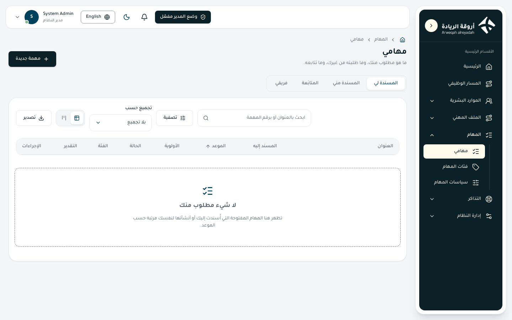
Who sees it
- View permission:
tasks.view(«View my tasks and task details»). Default scope: own (the tasks you are linked to). - Default roles: the Employee role holds it, together with create, edit and change-status for your own tasks. The «my team» tab needs
tasks.team_view(«View the team tasks page»), which the head role of every unit holds (unit and below). - The page does not need platform admin mode. An administrator can hide it for a role from the page visibility screen.
- A task you have no relation to, or that is outside your scope, is shown as «not found».
What you can do
| Action | What happens | Permission key (label) |
|---|---|---|
| New task | Opens a popup to create a task | tasks.create (Create a task) |
| Assign to someone else | Choose another person in the «Assigned to» field | tasks.assign (Assign a task to another person) |
| Open my team tab | Shows the tasks of direct reports or of everyone below you | tasks.team_view (View the team tasks page) |
| Matrix on the home page | Your open tasks in four squares | tasks.matrix_view (View the task matrix) |
| Edit a task | Changes title, details, due date, priority | tasks.update (Edit a task) |
| Move a task (drag or menu) | Changes the status of your own task | tasks.change_status (Change the status of my tasks) |
| Move a team task | Changes the status of a team member's task | tasks.team_change_status (Change the status of team tasks) |
| Approve / Reject | Decides on a task a person gave to themselves | tasks.approve / tasks.reject |
| Review (accept or send back) | Accepts finished work or returns it with a note | tasks.review |
| Reopen | Brings a finished task back | tasks.reopen (Reopen a finished task) |
| Resubmit | Sends a rejected task for approval again | tasks.resubmit |
| Object | Objects to a task given to you | tasks.object |
| Follow / Unfollow | Adds the task to your «Following» tab | tasks.follow (Follow a task) |
| Log time | Records time worked | tasks.log_time |
| Archived filter | Shows archived tasks | tasks.archive_view (View archived tasks) |
| Restore | Brings an archived task back | tasks.restore (Restore an archived task) |
| Export | Exports the list to a file (scope, columns, file type) | tasks.export (Export task lists) |
The list has no import: tasks are created one by one, not from a file.
How to
Create a task
- Click New task.
- Write the title (required) and the details.
- Choose the person (you, by default), the category, the due date (required, not in the past), the priority, the expected time in hours, and repetition (none, daily, weekly, monthly, with an optional end date).
- Turn on «Mark as urgent» or «Needs review» if needed.
- Read the line under the form: if the task is for yourself it says who approves it, or that no approval is needed. Click Create task.
Change the status of a task
- On the board, drag the card to another column using its handle, or open the task and use «Move to».
- If a note or a completion date is needed, a small window asks for it.
- If the move is not allowed, the card goes back and the reason is shown.
Follow my team
- Open the My team tab.
- Choose «My direct reports» or «Everyone under me».
- On the board tick «One row per person» to split the board by person.
Find a task
- Type in the search box: title or task number (TSK-000123).
- Use the filters: status, priority, person, category, stale only, overdue only, include finished and rejected, archived.
- Group the table by due date, status or person, and switch between table, cards and board. The page remembers your choice.
Business rules
- The page opens on open tasks, ordered by due date. Finished and rejected tasks appear only if you tick «Include finished and rejected» (the board always shows every column).
- Tabs: Assigned to me, Assigned by me, Following, and My team for managers. (FR-48)
- Statuses: Pending approval, To do, In progress, Awaiting review, Done, Rejected. A task has a number such as TSK-000123.
- Who may assign to whom: a manager to anyone under them; an employee to the manager of their department; people working on the same ticket to each other; anyone to themselves. (FR-48)
- Self-approval: a task you give to yourself starts as «Pending approval» and is approved or rejected by your direct manager. A person with no manager is approved automatically. An approved task becomes «To do». A rejected task is shown as «Rejected»; its owner edits it and presses Resubmit, and it goes back to the manager. (FR-51)
- Allowed moves:
| From | To | Who |
|---|---|---|
| Pending approval | any | nobody by dragging; only the approver's decision moves it |
| To do | In progress | the assignee, or a manager of the team |
| In progress | Done | the assignee or a manager; if the task needs review it goes to «Awaiting review» instead |
| Awaiting review | Done | the reviewer only |
| Awaiting review | In progress | the reviewer only, with a required note |
| Done | To do / In progress / Awaiting review | whoever assigned the task, or a manager (reopening) |
| Rejected | any | nobody; resubmit instead |
The reviewer is the person who gave the task (for a self task, the one who approved it). (FR-50)
- Late completion: if a task is finished more than 7 days after its due date, you must give the real completion date. Back-dating is limited to 7 days (the number is set in the task policies). (FR-50)
- Objection: the assignee of a task that someone else gave them may object while it is still «To do», choosing one reason: not my responsibility, not enough time, missing information, conflicting priorities. The task shows an «Objected» mark. The person who gave the task answers: reject (the task stays with the assignee) or accept and give it to someone else. An objection nobody answers lapses after 3 working days (Friday and Saturday are off) and the task stays with the assignee. (FR-52)
- Time log: minutes worked on a day, back-dating up to 7 days. When logged time passes the estimate, the assignee and the person who gave the task are notified once. (FR-48, FR-56)
- Marks: *Urgent* (marked by hand, due within 2 days, or overdue), *Overdue*, *Stale* (no movement for 30 days; not for tasks waiting for approval), *Objected*. Each mark has an icon and text. (FR-49)
- Reminders: a reminder the day before the due date; every Sunday morning each manager receives the overdue tasks of their team; recurring tasks create the next one when the current one is closed. (FR-53)
- Archive: a standalone task is archived 30 days after it closes and leaves the normal lists. Users with the archive key see it with the «Archived» filter and can Restore it; it returns in its earlier status and the assigner is notified. (FR-53)
- Notifications: the assignee is told when a task is assigned; the person who gave the task is told of every status change; the reviewer when a task awaits review; objections and their answers. Nobody is notified of their own change, and quick changes within a minute arrive as one notice. E-mail is sent only for the important ones and never contains the title. (FR-56)
- When an employee leaves, their open tasks go to their direct manager. (FR-55)
- Changes to a task made by two people at once are refused for the second person, who must reload and try again.
Tips / common problems
- A task you expect is missing: check the tab, and tick «Include finished and rejected».
- You cannot drag a card: the card is waiting for approval, rejected, or the move is not yours; the reason is shown when you try.
- You do not see the «My team» tab: you have no team permission or no one reports to you.
- The matrix on the home page counts a task as important if its priority is high and urgent if it is due soon, overdue or marked urgent.
22. Task details and conversation
Click any task in the list to open its page. The page shows what the task is, who is involved, the buttons you may use at this moment, the task conversation, and the history of everything that happened to the task. The conversation holds comments, replies, files and mentions of colleagues with @.
Who sees it
- View permission:
tasks.view(«View my tasks and task details»), scope own. You need to be related to the task: assignee, the person who gave it, approver, reviewer, follower, or a manager whose team includes the assignee. - The conversation needs
tasks.comment_view(«Read the comments of a task»). The Employee role holds all the comment keys except «delete anybody's comment» and the comment rules. - A task outside your reach is shown as «not found».
- A colleague who has an open task in the same category, or a person mentioned with
@, sees only the task number, title and conversation, nothing else.
What you can do
| Action | What happens | Permission key (label) |
|---|---|---|
| Edit | Changes title, details, due date, priority | tasks.update (Edit a task) |
| Move to | Changes the status, only to statuses allowed to you | tasks.change_status / tasks.team_change_status |
| Approve / Reject | Decides on a pending self task | tasks.approve / tasks.reject |
| Resubmit | Sends a rejected task back for approval | tasks.resubmit |
| Object | Objects to a task given to you | tasks.object |
| Answer the objection | Rejects it or gives the task to someone else | the person who gave the task |
| Log time | Records minutes worked on a day | tasks.log_time |
| Follow / Unfollow | Starts or stops notices about the task | tasks.follow |
| Restore | Brings an archived task back | tasks.restore |
| Write a comment | Adds a comment to the conversation | tasks.comment_add (Write a comment on a task) |
| Reply | Answers a comment | tasks.comment_reply (Reply to a comment on a task) |
| Attach files | Adds files to a comment | tasks.comment_upload (Attach files to a comment) |
| Mention with @ | Names a colleague | tasks.comment_mention (Mention a colleague with @ in a comment) |
| Edit my comment | Changes your own comment | tasks.comment_edit (Edit my comment) |
| Delete my comment | Removes your own comment | tasks.comment_delete (Delete my comment) |
| Delete anyone's comment | Removes someone else's comment | tasks.comment_delete_any (Delete anybody's comment) |
Only the buttons you may use are shown.
How to
Write a comment
- Open the task and go to the «Comments» section.
- Write in the «Write a comment» box. Press
Ctrl+Enterto send. - To mention a colleague type
@and pick the name from the list. - To attach files, use the attach box under the text (up to 5 files per comment by default). Click Send.
Reply to a comment
- Click the reply icon on the comment.
- Write your answer under it and click Send. Replies go one level only: a reply is shown under the comment it answers.
Edit or delete your comment
- Use the pencil or the bin icon on your comment.
- For deletion, confirm. The text and files disappear for everyone, a line «This comment was deleted» stays, and the replies under it stay too.
Log time or object
- Click Log time, enter the minutes and the working day, then confirm.
- Or click Object, choose the reason, add an optional note and send.
Business rules
- The page shows: status, priority and marks (urgent, overdue, stale, objected), who gave the task, the reviewer, the approver, logged time against the estimate, repetition, followers, and the history of events (created, edited, status changed, approved, rejected, resubmitted, objection, archived, restored, ownership moved, time logged). (FR-48)
- A banner appears for an archived task, for an open objection (with the date it lapses), and for a task waiting for approval (with the approver's name).
- Who may do what in the conversation is decided by two things together: your role must hold the key of the action, and your relation to the task must be switched on for that action in the company's table («Who does what in task comments», see the Task policies section). You may have several relations at once; one is enough. (FR-66)
- By default the parties of the task (assignee, the person who gave it, approver, reviewer, follower, manager) may do every action. A colleague of the same category and a mentioned person may only read, write and reply.
- Only active employees of the company can be mentioned. A mentioned person joins the conversation as «mentioned»; this does not make them a follower and does not open the task to them.
- You may edit or delete your own comment for 15 minutes after writing it (the number is in the task policies). An edited comment shows «Edited». Deleting someone else's comment needs its own key.
- A comment needs text or at least one file. Text is limited to 5000 characters.
- The conversation stays open after the task is done. When the task is archived it is read-only, and the company may close it some days after the task is closed (0 = never). The page then says «The conversation of this task is closed: you can only read».
- Notices: the mentioned person (also by e-mail), the person you reply to, the assignee and the person who gave the task, and followers (once, while an earlier notice is unread). Nobody is notified of their own comment. E-mail never carries the text of a comment.
- File previews open for images and PDF only; other files download. Word and Excel files are accepted; the system checks the real file type, not just the name.
- The conversation has no list, so it has no export. Comments are recorded in the audit log without their text. (FR-66)
Tips / common problems
- You can read but cannot write: your role lacks the key, or your relation to the task is switched off for writing. Ask an administrator.
- The edit icon disappeared: the edit time passed.
- You see only the title and the conversation: you are a same-category colleague or were mentioned.
23. Task categories
Every department keeps its own categories for its tasks, for example «Reports» or «Meetings». A category is chosen when a task is created or edited, and tasks can be filtered by it. This page lists the categories and lets authorised people add, edit and delete them.
Who sees it
- View permission:
tasks.tags_view(«View the task tags page»). Scopes you can give: own (the person's own department), unit, unit and below, company, all. - Default roles: no default role holds it, including the Employee role and the unit head role. An administrator gives it from the permissions page.
- The page does not need platform admin mode. It appears in the menu under Tasks, and can be hidden by page visibility.
What you can do
| Action | What happens | Permission key (label) |
|---|---|---|
| Add category | Opens a popup to create a category | tasks.tag_create (Add a task tag) |
| Edit (row icon, or click the row) | Changes the names, the department or the status | tasks.tag_update (Edit a task tag) |
| Delete (row icon) | Deletes the category after confirmation | tasks.tag_delete (Delete a task tag) |
| Export | Exports the list (scope, columns, file type) | tasks.export (Export task lists) |
| Search | Searches the name or the department | — |
| Filter by status | Shows only active or only inactive categories | — |
| Table / cards | Switches the way the list is shown | — |
The list has no import: categories are few and are added one by one.
How to
Add a category
- Click Add category.
- Write the name in Arabic and the name in English (the English name can be filled in automatically while you type Arabic).
- Choose the department the category belongs to.
- Keep «Active (shown when tasks are created)» ticked, then save.
Stop using a category without deleting it
- Click the row, untick «Active», and save.
- The category no longer appears when tasks are created, and old tasks keep it.
Delete a category
- Click the delete icon on the row.
- Read the confirmation «Delete the category?» and confirm.
Business rules
- A category belongs to one department only. People creating a task see the categories of their department. (FR-54)
- Both names (Arabic and English) are required.
- Only active categories are offered when creating tasks.
- If tasks use a category, deactivate it instead of deleting it; the confirmation message says so.
- Your permission scope decides which departments' categories you may add, edit or delete: «own» means your own department; wider scopes reach the units below you, the company, or everything.
- The categories also decide who may see the conversation of a task: a colleague with an open task in the same category may read, write and reply in that task's conversation (see Task details and conversation).
- Changes are recorded in the audit log.
Tips / common problems
- The category list is empty when creating a task: your department has no active category yet. Ask someone with
tasks.tag_createto add one. - You cannot delete a category: tasks use it. Deactivate it.
24. Task policies
This page holds every number that governs tasks for one company (when a task counts as urgent, when a reminder is sent, how long an objection waits, and so on) and, below them, the table of who may do what in task conversations. Every number has limits, so no value can switch tasks off.
Who sees it
- View permission:
tasks.policies_view(«View the task policies page»), scope all. - Needs platform admin mode: yes. The page appears in the menu only while admin mode is on.
- Default roles: no ordinary role holds it (not the Employee role and not the unit head role); it belongs to the platform administrator. The table of conversation rules needs
tasks.comment_rules_view(«View the comment rules matrix»).
What you can do
| Action | What happens | Permission key (label) |
|---|---|---|
| Choose the company | Shows the policies of that company | tasks.policies_view |
| Change numbers and Save | Saves all the numbers of the company at once | tasks.policies_edit (Edit the task policies) |
| View the conversation table | Shows who may do what in task comments | tasks.comment_rules_view (View the comment rules matrix) |
| Change the conversation table and Save | Saves the whole table at once | tasks.comment_rules_edit (Edit the comment rules matrix) |
Without the edit key the fields can be read but the Save button is not shown.
How to
Change a policy number
- Turn on platform admin mode.
- Open Task policies and choose the company.
- Change the number. The allowed range is shown under each field; a number outside it shows an error and Save stays disabled.
- Click Save. The message «Policies saved» appears.
Change who may do what in comments
- Scroll to «Who does what in task comments».
- Each row is a relation to the task; each column is an action: read, write a comment, reply, upload a file, mention with @, edit own comment, delete own comment.
- Tick or untick the boxes and click Save. The change applies at once, including to old comments.
Business rules
- The numbers, their default values and their limits (FR-54, FR-66):
| Number | Default | Allowed |
|---|---|---|
| Urgent if due within (days) | 2 | 0 to 14 |
| Reminder before due date (days) | 1 | 1 to 7 |
| Back-dating allowed (days) | 7 | 0 to 30 |
| Stale after no movement (days) | 30 | 7 to 180 |
| An objection lapses after (working days) | 3 | 1 to 10 |
| Managers' digest day (0 = Sunday … 6 = Saturday) | 0 | 0 to 6 |
| Archive standalone tasks after closing (days) | 30 | 7 to 365 |
| Most files in a comment | 5 | 1 to 10 |
| Time to edit or delete a comment (minutes) | 15 | 0 to 1440 |
| Close the conversation after the task is done (days, 0 = never) | 0 | 0 to 365 |
- Policies are per company; each company has its own numbers.
- Working days exclude Friday and Saturday.
- A policy change is recorded in the audit log.
- The conversation table: a row for each relation (the assignee, the person who gave the task, the responsible approver, the reviewer, the follower, the manager inside the team's scope, a colleague with an open task in the same category, a person mentioned with @). An action passes when the person's role holds its key and a box is ticked for one of their relations.
- By default the first six relations may do everything. The colleague and the mentioned person (marked with *) may only read, write and reply; they see only the task number, title and conversation.
- A company starts with these defaults until someone changes them.
Tips / common problems
- The page is not in the menu: turn on platform admin mode, or you lack
tasks.policies_view. - Save is disabled: one of the numbers is empty or outside its range.
- A person says they cannot comment: check both their role keys and their relation row in the conversation table.
Tickets
25. Tickets
A ticket is the official way to ask another department for something: you choose the department and the kind of request, write what you need, and follow the replies until the ticket is closed. Each ticket has a number such as TKT-000123. The list can be shown as a table, as cards, or as a board with one column per status.
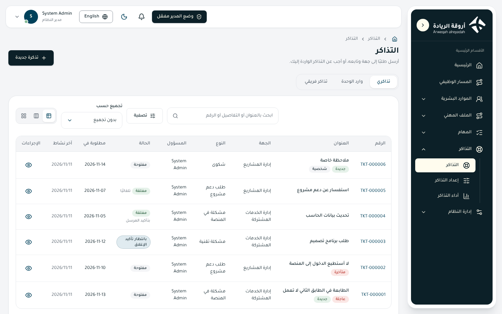
Who sees it
- View permission:
tickets.view(«View the tickets page and ticket details»). Default scope: own, meaning the tickets you sent or that are handled by you. - Default roles: the Employee role holds view (own), send a ticket, reply (own), ask to close, confirm or reject closing, close without execution, reopen, and the reply and mention keys. The head role of each unit holds view and reply at «unit and below».
- No platform admin mode is needed.
- A ticket outside your relation or scope is shown as «not found». Attachments can be downloaded only by people who may see the ticket.
What you can do
| Action | What happens | Permission key (label) |
|---|---|---|
| New ticket | Opens the two-step popup to send a ticket | tickets.create (Send a new ticket) |
| Open a ticket | Click the row, or the eye icon, to open its page | tickets.view |
| Reply | Writes an answer with files and mentions | tickets.reply (Reply to and handle tickets) |
| Answer a reply | Replies to one reply, one level only | tickets.comment_reply (Answer a reply inside a ticket) |
| Mention with @ | Names a colleague in a reply | tickets.comment_mention (Mention a colleague with @ in a ticket reply) |
| Ask to close | The department asks the sender to confirm execution | tickets.request_close (Ask to close a ticket) |
| Confirm execution | The sender confirms and the ticket is closed | tickets.confirm_close (Approve the closing of a ticket) |
| Not yet executed | The sender rejects the closing; the ticket returns to the department | tickets.decline_close (Reject the closing of a ticket) |
| Close without execution | The department closes it, explaining why | tickets.close_without_execution (Close a ticket without executing it) |
| Reopen | The sender reopens a closed ticket within the allowed days | tickets.reopen (Reopen a closed ticket) |
| Quick reply | On the board, a short reply from the card | tickets.reply |
The tickets list has no export or import button. Tickets are sent one by one from the popup, not from a file.
How to
Send a ticket
- Click New ticket.
- Step 1: type in «What do you need?», or narrow by department and kind (regular or personal). Choose the view «By department» or «Compact list». Click the kind you want.
- Step 2: write the title (required) and the details, choose the needed-by date, mark the ticket urgent if needed, and attach up to 5 files.
- Press Send (or
Ctrl+Enter). The message «The ticket was sent» appears and the ticket gets its number.
Answer a ticket you handle
- Open the Incoming to the unit tab and click the ticket.
- Write in «Your reply», attach files if needed, and click Send reply.
- When the work is done, click Ask to close and add an optional message.
Close a ticket you sent
- Open the ticket. If the department asked to close, you see Confirm execution and Not yet executed.
- Click Confirm execution to close it, or Not yet executed to send it back open with your message.
- If the ticket is closed and you still need it, click Reopen (the page shows how many days are left).
Find tickets
- Use the search box (title, details or number) and the filters: department, type, assignee, status.
- Group by assignee, status, department or type, and switch between table, board and cards.
Business rules
- Tabs: My tickets (tickets I sent), Incoming to the unit (tickets assigned to me, or to my department if I manage it, or by my reply scope), My team's tickets (those of the people in my view scope). A tab appears only if you have something in it. (FR-38)
- Statuses: Open, Awaiting close confirmation, Closed. A closed ticket shows how it ended: by sender's confirmation, automatically, or without execution. Marks: urgent, overdue, stale, new (nobody answered yet), personal.
- A ticket cannot be edited after it is sent. The conversation continues with replies until closing.
- Sending is refused when the department's reception is paused or stopped, when it has not started yet, or when it has no manager. A department that is stopped is not offered at all. (FR-37)
- The needed-by date cannot be earlier than the department's minimum lead time; the form tells you the earliest date.
- Life cycle: (FR-39)
| Action | From | To | Who |
|---|---|---|---|
| Ask to close | Open | Awaiting close confirmation | the assignee or the department manager |
| Confirm execution | Awaiting confirmation | Closed (confirmed) | the sender |
| Not yet executed | Awaiting confirmation | Open | the sender |
| Sender replies | Awaiting confirmation | Open | the sender |
| Close without execution | Open or awaiting | Closed (not executed) | the department side |
| Automatic close | Awaiting confirmation | Closed (automatic) | the system, after the desk's days with no answer |
| Reopen | Closed | Open | the sender, within the reopen days |
- Default durations of a department: usual completion 3 working days, automatic close 4 days after the close request, reopen window 7 days, stale after 14 days. Each department can change them (see Ticket setup). Working days exclude Friday and Saturday. (FR-41)
- Personal tickets (complaints and personal matters) go straight to the person assigned to that type. They are hidden from the unit manager and from platform administrators; the figures count them but never list them. (FR-38)
- Replies: up to 5 files each, text up to 5000 characters, one level of answers to a reply. In a personal ticket only the sender and the assignee can be mentioned. Previews open for images and PDF; Word and Excel files are accepted.
- Notices (in the app, and by e-mail for important ones) carry only the ticket number and the department, never its text. The person you mention is told, and so is the person whose reply you answer. (FR-39)
- Two people changing a ticket at the same moment: the second action is refused and must be repeated.
Tips / common problems
- You cannot find the department you want: it may be paused, stopped, not started, or without a manager.
- You see no «Incoming» tab: no tickets are assigned to you or your department.
- The «Reopen» button vanished: the reopen days are over; send a new ticket.
26. Ticket setup
Here the leader of a unit decides whether the unit receives tickets, what the sender reads about it, which kinds of ticket it takes, who handles each kind, and how long each step may take. Any unit of the organization structure (sector, department, section, unit, office) can be a ticket desk.
Who sees it
- View permission:
tickets.setup_view(«View the ticket setup page»). Scopes: own (the units you lead and every unit below), unit, unit and below, company, all. - Needs platform admin mode: yes. Without it the page only says that admin mode must be turned on.
- Default roles: the head role created automatically for every unit holds the setup keys at «unit and below». Ordinary employees do not.
- You see only the units inside your scope; a person with scope «all» sees every unit.
What you can do
| Action | What happens | Permission key (label) |
|---|---|---|
| Choose the unit | Shows the setup of that unit (a tree picker, with search) | tickets.setup_view |
| Change reception, descriptions, durations and Save | Saves the unit's settings | tickets.setup_edit (Edit a unit's reception and durations) |
| Add type | Opens a popup for a new kind of ticket | tickets.type_create (Add a ticket type) |
| Edit type (pencil icon) | Changes a type | tickets.type_update (Edit a ticket type) |
| Delete type (bin icon) | Deletes or deactivates a type | tickets.type_delete (Delete a ticket type) |
The page has two tabs: Settings and Types.
How to
Switch on a desk
- Turn on platform admin mode and open Ticket setup.
- Choose the unit. Under the picker you see «Manager: …»; if there is none, set the manager in the organization structure first.
- In Settings, set the reception status to «Active» and write the description the sender will read (Arabic and English).
- Set the durations and click Save.
Add a ticket type
- Open the Types tab and click Add type.
- Write the name and the description (Arabic and English).
- Choose the assignee: the employee who receives tickets of this kind. Leave it empty and the unit manager handles them.
- Optionally set a special duration in working days; leave it empty to use the unit's usual duration.
- Tick «Personal type» if the type is for complaints or private matters; a personal type must have an assignee. Keep «Active type» ticked and save.
Pause reception
- In Settings choose «Paused» (the unit shows as disabled with a message, and you resume it by hand) or «Stopped» (the unit is not shown to anyone).
- Save. Tickets already open continue to be handled as usual.
Business rules
- Reception status: Active (the unit appears and receives tickets), Paused (appears disabled with a message), Stopped (not shown to anyone). A unit with no manager cannot be activated. (FR-36)
- Nothing is accepted before the unit's start date.
- Durations (all whole numbers of days, each with its limits shown on screen) (FR-36, FR-41):
- the usual completion time, in working days (Friday and Saturday are off); default 3
- the earliest date a sender may ask for, default 0
- automatic close after a close request, default 4
- the time allowed to reopen a closed ticket, default 7
- a ticket counts as stale after, default 14
- A type has a name, a description, an assignee, an optional special duration and a flag for personal. If no assignee is set, the unit manager handles the ticket.
- Personal types are invisible to the unit manager and to platform administrators; they need an active assignee. (FR-38)
- Deleting a type: if tickets already use it, it is only deactivated and keeps its tickets; otherwise it is deleted. The message tells you which happened.
- A unit that takes tickets (active or paused) or has open tickets cannot be moved or deleted in the organization structure.
- The unit manager is chosen in the organization structure, not on this page.
- Changes are recorded in the audit log.
Tips / common problems
- «This page works in platform admin mode»: turn the mode on from the top of the page.
- «Active» is refused: the unit has no manager yet.
- A sender says the unit is not offered: check that reception is Active, the start date has come, and the unit has at least one active type.
27. Ticket figures
The figures page shows how the ticket desks performed over the last 30 days: how many tickets are open, how many arrived, how fast they were answered and solved, how they ended, and what needs action today. It shows counts only.
Who sees it
- View permission:
tickets.figures_view(«View the ticket figures page»). Scopes: own (the units you lead and every unit below), unit, unit and below, company, all. - Needs platform admin mode: yes.
- Default roles: the head role of every unit holds it at «unit and below». A platform administrator sees every department.
What you can do
| Action | What happens | Permission key (label) |
|---|---|---|
| Choose a department | Shows that department only; «All departments» adds them up | tickets.figures_view |
| Read the indicators and tables | Counts and averages of the last 30 days | tickets.figures_view |
The page is for reading. It has no buttons that change data, and no export or import.
How to
Read the figures of one department
- Turn on platform admin mode and open Ticket figures.
- At the top choose the department. The list holds every department of the organization structure you may see, even those not set up for tickets (their numbers are zero).
- Read the blocks from top to bottom.
See everything together
- Choose «All departments».
- The figures are added up and the tables get a «Department» column.
Business rules
- The period is the last 30 days. (FR-40)
- Indicators: Open now; Incoming tickets (with «of which N personal»); Average time to first reply; Average completion time, in hours.
- How tickets ended: closed by the sender's confirmation; closed automatically; closed without execution; reopened after closing.
- By ticket type: the count of tickets of each type.
- Ticket assignees: for each person, open tickets, closed tickets and average time to first reply.
- What needs action today: tickets that are overdue or stale; if there are none the page says «Nothing overdue or stale.»
- Personal tickets are counted in the totals but never appear in a list, so their content stays private. (FR-40)
- With one department the figures are that department only; with «All departments» they are the sum of the departments you may see.
- A department you lead covers the units below it as well.
Tips / common problems
- «No departments set up yet»: set up a department on the Ticket setup page and its numbers will appear here.
- The numbers look low: only the last 30 days are counted.
- A person does not appear under assignees: no ticket of the period was assigned to them.
System administration
28. Roles and permissions
What this page is
A role is a set of permissions given to everyone who holds it. On this page you see all the roles of the platform, how each one is given (by hand or automatically) and how many people hold it. You can create a new role or change the permissions of an existing one. Each permission inside a role has a scope that decides which records it covers. The page has two tabs: «Roles» and «Exceptions».
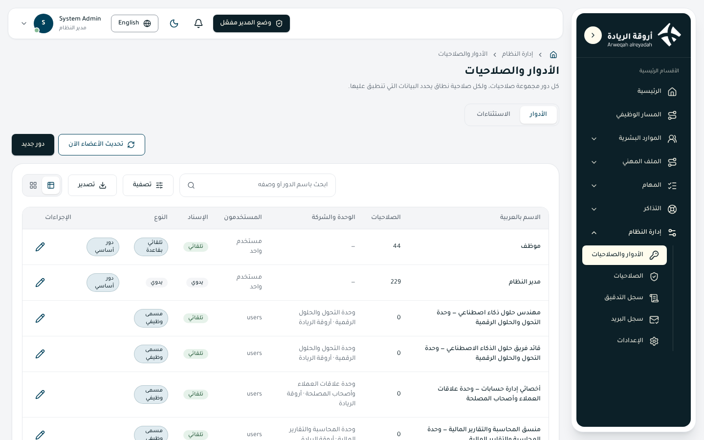
Who sees it
| Item | Detail |
|---|---|
| View key | roles.view (View the roles and permissions page) for the Roles tab, and exceptions.view (View the exceptions page (what was given outside the job title)) for the Exceptions tab |
| Default scope | All |
| Platform admin mode | Required. The page appears in the menu only after you turn it on; if you open it without the mode, a message asks you to turn it on |
| Default roles that hold it | The built-in «System Admin» role holds every key of the platform at the «All» scope. The «Employee» role, the unit head roles and the job title roles do not hold the keys of this page. The other administrative roles (for example «Platform manager», «Platform configurator», «Platform auditor») start with no permissions, and an administrator gives them what is needed on the Permissions page |
What you can do (Roles tab)
| Action | What happens | Permission key (label) |
|---|---|---|
| «New role» | Opens a window to create a role with Arabic and English names, a description and its permissions | roles.create (Add a role) |
| Open a role (click the row or the edit icon) | Opens the edit window: names, description, assignment and the permission matrix | roles.update (Edit a role and its permissions) |
| Delete icon | Deletes the role after you confirm; its holders lose its permissions at once | roles.delete (Delete a role) |
| «Refresh members now» | Recalculates the members of the automatic roles right away and shows how many changes were made | roles.sync_auto (Refresh the members of the automatic roles now) |
| Export button | Exports the list of roles to a file after you choose the scope, the columns and the file type | roles.export (Export roles) |
| Search, filters, table/cards switch | Narrow the list by name, description, or unit and company. Filters: type (built-in/custom), assignment, kind, company, has holders | No extra key |
List columns: name, number of permissions, unit and company (for job title roles), number of users, assignment (automatic/manual), kind, and a «Built-in» badge.
Kinds of roles
| Kind | Who holds it | How it is managed |
|---|---|---|
| Manual | Whoever HR or a manager gives it to | From the employee form or the Permissions page |
| Automatic (rule) | «Employee»: everyone added to the platform. «Direct manager»: everyone who has people reporting to them. «Collaborator base»: people whose relation type has limited access | The rule refreshes the members after every change to employees and every night |
| Job title | Everyone who holds the title | The role is created with the title, carries its name and is removed with it |
| Unit head | The manager/leader of the unit | Created with the unit as «Head of {unit}» and starts with the default head permissions |
How to
Create a role
- Open «Roles & permissions» (after turning on platform admin mode) and press «New role».
- Type the Arabic name; the English name is filled in automatically and you can edit it. Both names are required (at least two characters).
- Add a short description and choose the assignment (manual or automatic).
- Tick the permissions needed, choose the scope of each, then press «Save».
Change the permissions of a role
- Click the role's row.
- Use «Search permissions» to find a permission by its name or key.
- Tick or untick the permission and change its scope in the list beside it. «Select all permissions» and «Clear all» save time.
- Beside «Edit employees» there is a «Fields they may change» button to choose which fields of the employee record its holder may change.
- Press «Save».
Refresh the automatic roles at once
- Press «Refresh members now».
- A message shows the number of changes, or «Members are up to date, nothing changed».
Business rules
- Scopes: every permission is given with a scope: «Own record only», «Their unit», «Their unit and 1 level below» up to 5 levels, «Their unit and below», «Their whole company», «All companies». The list offers only the scopes the permission itself allows. If a person holds the same permission from several sources, the widest scope wins (FR-80).
- Outside the scope: a record outside a person's scope appears to them as if it did not exist («not found»), not as forbidden.
- Job title and unit head roles follow their title or unit: their name and members cannot be changed by hand, they cannot be deleted or assigned manually. Only their permissions and description can be edited. A job title role starts as a copy of the permissions of a role chosen when the title was created (default «Employee») and an administrator edits it afterwards (FR-68, FR-69).
- A role with a rule cannot become manual and cannot be assigned by hand.
- Built-in roles (such as «Employee» and «System Admin») cannot be deleted.
- The «Employee» role is given automatically to every new employee. It is stored like any other role: it can be removed on the employee form and does not come back by itself (FR-43).
- Head role permissions: every new unit gets a head role that starts with the leader's own account pages and the people, tasks, tickets, team evaluation and career path of the unit and below. Existing roles change only when an administrator edits them.
- Deleting: when a role is deleted, all its holders lose its permissions at once.
- Audit: every creation, change, deletion and refresh is recorded in the audit log under the name of who did it.
- Giving what you do not hold: nobody can give another person a permission at a wider scope than they hold themselves.
Groups of roles and groups of people
Both are managed from the «Permissions» page (see its section); each action has its own key.
| Action | What happens | Permission key (label) |
|---|---|---|
| View groups of roles | They appear on the Permissions page | role_groups.view (View groups of roles on the permissions page) |
| Add a group of roles | Bundles roles that go together under one name | role_groups.create (Add a role group) |
| Edit a group of roles | Change its name and its roles | role_groups.update (Edit a role group) |
| Delete a group of roles | People it was given to lose what came through it | role_groups.delete (Delete a role group) |
| View groups of people | They appear on the Permissions page | user_groups.view (View groups of people on the permissions page) |
| Add a group of people | Chosen people who get the same permissions | user_groups.create (Add a user group) |
| Edit a group of people | Change the name and the members | user_groups.update (Edit a user group and its members) |
| Delete a group of people | Members lose what came through it | user_groups.delete (Delete a user group) |
- A group of roles is given to a person (from the employee form, with the permission
employees.assign_groups, never beyond what the giver holds) and they then hold all its roles. Permissions placed on the group reach the people it is given to and everyone who holds one of its roles (FR-46). - A group of people is a set of people you choose by name or e-mail; all of them get the group's permissions.
The Exceptions tab
It lists everything given to a person outside what their job title brings: manual roles, personal permissions and groups of roles, each with its last day, so no permission is forgotten. Columns: person, kind (role/personal permission/group of roles), given, scope, given by, given on, ends on.
| Action | What happens | Permission key (label) |
|---|---|---|
| «Change the end date» | Sets the last day the exception holds, or removes the date | exceptions.update (Change the end date of an exception) |
| «Take it back» | Takes it back at once after you confirm; the person loses what it gives | exceptions.revoke (Take an exception back) |
| Export | Exports the list | exceptions.export (Export the exceptions) |
- Filters: kind, given by, «Ends within 7/14/30/60 days», «No end date». Search by person, what was given or who gave it. Table and cards views are available.
- An exception holds through its last day (Riyadh time). After it the permission is gone at once, and the platform takes the row back overnight and records it in the audit log. An exception ending within 7 days shows a warning badge.
- A date in the past is not accepted.
- The «Employee», job title and unit head roles are not exceptions (FR-70).
- The end date is set when the role is given on the employee form (a date beside each ticked role) or from this list.
Tips and common problems
- I do not see the page in the menu: turn on «Platform admin mode» at the top of the page (a fresh code from your authenticator app is needed), and check that you hold
roles.viewand that the page is not hidden from your roles. - I cannot give an employee a role: you can only give what you hold the keys of, and job title and head roles are calculated automatically.
29. Permissions
What this page is
Every page of the platform has a «view» key, and every button or action (add, edit, delete, approve, export, import…) has its own key. This page is the single place where an administrator decides what a role, a group of roles, one person or a group of people may do, and how far. You choose what the permissions go on, then tick what they may do and the scope.
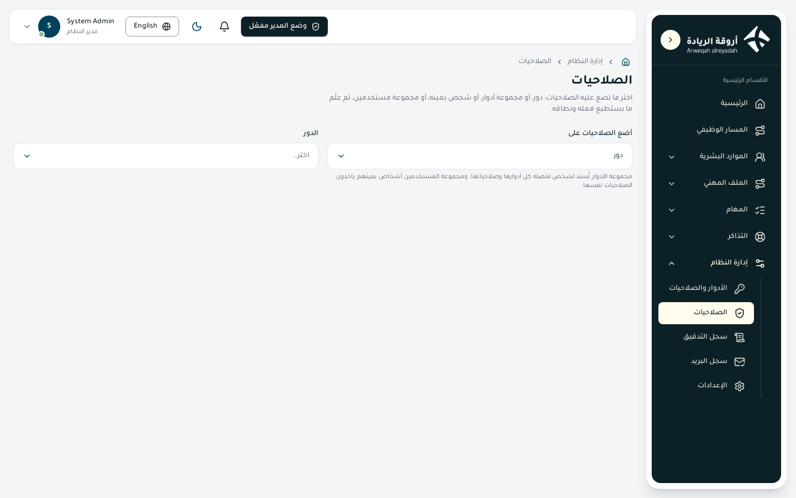
Who sees it
| Item | Detail |
|---|---|
| View key | permissions.view (View the permissions page) |
| Default scope | All |
| Platform admin mode | Required |
| Default roles that hold it | Only the built-in «System Admin» role (it holds every key). Other roles start without the keys of this page and an administrator gives them |
What you can do
| Action | What happens | Permission key (label) |
|---|---|---|
| Choose «Place permissions on» (a role / a group of roles / one person / a group of people), then the name | The page shows the current permissions of what you chose | permissions.view (View the permissions page) |
| Tick permissions, choose their scope and save them on a role | They apply to everyone who holds the role | permissions.role_update (Set the permissions of a role) |
| Save on a group of roles | They apply to everyone the group is given to and everyone who holds one of its roles | permissions.role_group_update (Set the permissions of a group of roles) |
| Save on one person | They belong to that person alone, on top of what their roles and groups give | permissions.user_update (Set the permissions of one person) |
| Save on a group of people | They apply to every member of the group | permissions.user_group_update (Set the permissions of a group of people) |
| «New group of roles» | Creates a group bundling roles under one name | role_groups.create (Add a role group) |
| «Edit the group» (group of roles) | Change the name and the roles inside | role_groups.update (Edit a role group) |
| Delete (group of roles) | Deletes it after you confirm | role_groups.delete (Delete a role group) |
| «New group of people» | Creates a group of people | user_groups.create (Add a user group) |
| «Edit the group» (group of people) | Change the name, add and remove members | user_groups.update (Edit a user group and its members) |
| Delete (group of people) | Deletes it after you confirm | user_groups.delete (Delete a user group) |
| «Select all permissions» / «Clear all» / search | Shortcuts inside the matrix | No extra key |
How to
Place permissions on a role
- Turn on «Platform admin mode», then open «Permissions».
- In «Place permissions on» choose «A role», then choose the role in the «Role» list.
- Tick the permissions a holder of the role may use, and choose the scope of each from the list beside it.
- Press «Save». The message «Permissions saved.» appears.
Give one person particular permissions
- Choose «One person».
- Open the «Person» list, or type a letter of the name or e-mail to narrow it, then choose the person.
- Tick the extra permissions to give them alone. What already reaches them through their roles and groups shows with the badge «Comes from roles and groups» and its scope.
- Press «Save».
Create a group of roles and give it permissions
- Choose «A group of roles» and press «New group of roles».
- Type the Arabic and English names and an optional description, choose the roles it bundles (search by name) and save.
- Pick the group from the list, tick the extra permissions for it, and press «Save».
Create a group of people
- Choose «A group of people» and press «New group of people».
- Type the two names, search people by name or e-mail and add them, then save.
- Pick the group, tick its permissions and press «Save».
Scopes
Beside each permission is the scope list (shown only for permissions that allow more than one scope):
| Scope | Covers |
|---|---|
| Own record only | The person's own record |
| Their unit | Records of their organization unit (and the units they manage) |
| Their unit and 1 … 5 levels below | The unit and a set number of levels below it |
| Their unit and below | The unit and everything below with no limit |
| Their whole company | Every record of their company |
| All companies | Every company |
Business rules
- Nobody places more than they hold: you cannot place a permission at a wider scope than yours, nor fields you cannot change yourself; the attempt is refused.
- Permissions add up: a person gets the total of what comes from their roles, groups of roles, groups of people and what was given to them alone; the widest wins when the same permission repeats. The matrix shows what reaches the chosen target from elsewhere, with a badge beside the permission.
- The fields a holder of «Edit employees» may change: beside this permission a «Fields they may change (count)» button opens a window to choose which fields of the employee record its holder may change, grouped (personal details, contact, work, identity and name, contract and insurance, pay and account, notes, structure and relation) with «Basic», «All» and «None». It starts with the basic data (contact and personal). These fields add to what other roles give the same person, apply to the records the scope reaches, and the person's own record always counts. The unit, job title and manager also need the permission «Change placement from a date».
- Keys are declared: every page and button has a key with Arabic and English labels; a person without a key does not see the button, and the platform refuses the action if they try another way.
- Deleting a group: the people it was given to (or its members) lose the permissions that came through it.
- Audit: every change is recorded in the audit log, with key names only (FR-47).
- Personal permissions later show in the «Exceptions» tab of the Roles page with their end date, if any.
- What an ordinary employee gets: every employee starts with the «Employee» role, which holds their account pages, tasks, tickets, team directory and the structure page. Everything else is given from this page or from the employee form.
Tips and common problems
- The message «This page works in platform admin mode» appears: turn the mode on at the top of the page with a fresh authenticator code; it stops by itself after 30 minutes without admin activity.
- The «Save» button is missing: you need the save key for the kind you chose (role, group of roles, person or group of people).
- I search for a person and they do not show: type the first letter of their name or e-mail.
- Saving was refused: most likely you are trying to give a scope or fields wider than you hold.
30. Audit log
What this page is
A record of every important event on the platform: who did what, when and from which address, as a plain sentence and a category (sign-in, employees, tasks…). Here you review every sign-in and every change to employees, the organization, permissions, tickets, tasks and settings. Sensitive data never appears in it.
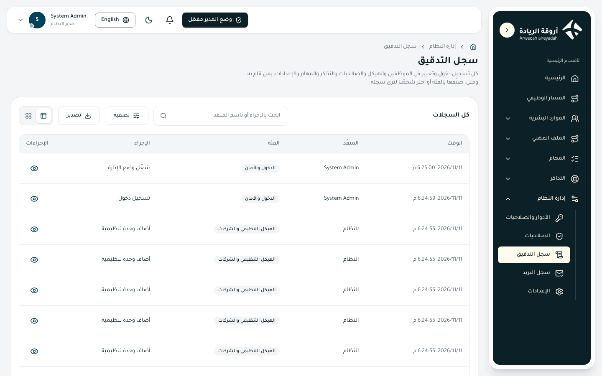
Who sees it
| Item | Detail |
|---|---|
| View key | audit.view (View the audit log page) |
| Default scope | All |
| Platform admin mode | Required |
| Default roles that hold it | The built-in «System Admin» role. A «Platform auditor» role exists in the roles list and starts without permissions; an administrator gives it the keys it needs. The «Employee» role and the unit head roles do not hold it |
What you can do
| Action | What happens | Permission key (label) |
|---|---|---|
| Open the page, search and filter | Shows the log, newest first, narrowed by what you type or choose | audit.view (View the audit log page) |
| «View» icon or click on a row | Opens the «Audit entry» window: time, actor, category, action, IP address and the changes | audit.view |
| Export button | Exports the log to a file after you choose the scope, columns and file type (columns: when, by, category, action, IP address) | audit.export (Export the audit log) |
| Integrity check of the log | The platform runs it by itself every week and records any problem; there is no button for it on this page | audit.verify (Check the audit log has not been tampered with) |
Table columns: when, by (or «System» for automatic events), category, action. You can switch between table and cards.
How to
Find what a person did
- Turn on «Platform admin mode» and open «Audit log».
- In the filters type the person's name or e-mail in «Person (name or e-mail)».
- Set «From date» and «To date» if you want a period.
- Click any row to see its details.
Find who changed a particular thing
- Choose the «Category» (for example «Roles and permissions»); the «Action» filter then narrows its list to that category's actions.
- Choose the «Action», or type part of the sentence, or the id of the record, in the search box.
Export the log
- Narrow what you want with the filters.
- Press the export button and choose the scope (this page or all), the columns and the file type.
Categories
Sign-in and security, Employees, Organization and companies, Roles and permissions, Tickets, Tasks, System settings, Other.
Business rules
- Every action is a plain sentence (for example «moved a task to another status») with a category, not a technical name (FR-63).
- Filters: category, action (only the sentences of the chosen category), person (name or e-mail), from date, to date. Search finds the sentence in either language, the actor's name and the id of the record concerned.
- Secrets are hidden: sensitive values (national ID, IBAN, passwords, keys) are blocked by field name before writing, so they appear neither in the log nor in the exported file. Mostly the names of the fields that changed are recorded, not their values (FR-11).
- Never edited or deleted: each entry is chained to the previous one with a digital fingerprint, and the database refuses to change or delete it; the platform checks the chain weekly and records a failure if it breaks (FR-75).
- Signing in as another employee: every entry written during it carries the administrator's name beside the employee's, and the start and end of the session are recorded.
- Time: times show in your device's time zone.
- Read only: nothing on the page changes the log.
Tips and common problems
- I cannot find an event: search with part of the sentence, widen the period, or clear the category.
- The action I look for is not in the list: choose the right category first; the list shows the actions of the chosen category.
- I want to know who changed permissions: filter by the «Roles and permissions» category and open the entry to see the actor, the time and the changes.
31. Sent e-mail log
What this page is
It shows every e-mail the platform sent and its status: Pending, Sent or Failed, with the reason for a failure. Use it to know whether an activation invitation reached an employee, or why a notice did not arrive by e-mail. The message text itself is not stored.
Who sees it
| Item | Detail |
|---|---|
| View key | notifications.email_log (View the sent e-mail log page) |
| Default scope | All |
| Platform admin mode | Required |
| Default roles that hold it | Only the built-in «System Admin» role; the «Employee» role and the unit head roles do not hold it |
What you can do
| Action | What happens | Permission key (label) |
|---|---|---|
| Open the page, search and filter | Shows the e-mails, newest first | notifications.email_log (View the sent e-mail log page) |
| «View» icon or click on a row | Opens the «Sent e-mail» window with the details of the message | notifications.email_log |
| Export button | Exports the log to a file after you choose the scope, columns and file type | notifications.email_log_export (Export the sent e-mail log) |
Table columns: when, to, subject, category, status, details (the failure reason or the server's reply). You can switch between table and cards.
The details window shows: when, sent at, to, subject, category, status, error, server response.
How to
See what was sent to a person
- Turn on «Platform admin mode» and open «E-mail log».
- Type the person's e-mail in the «Person (e-mail)» filter.
- Click the message you want to see its status.
Look for failed e-mails
- Choose the status «Failed» in the filters.
- Open the message and read «Error» and «Server response».
- If failures repeat, check «Settings → E-mail» and try the service.
Categories and statuses
| Categories | Statuses |
|---|---|
| Account activation invitations, Tickets, Tasks, General notices, E-mail settings test, Other | Pending, Sent, Failed |
Business rules
- Filters: status, category, person (e-mail), from date, to date. Search by subject or the person's e-mail (FR-26, FR-63).
- The message text is not stored because it can hold one-time links; only the recipient, subject, status, failure reason and server reply are kept.
- The category is set by whoever sends the message: activation invitations, tickets, tasks, general notices. Test messages (from trying the e-mail service or «Send me a test» in the e-mail templates) are filed as «E-mail settings test». Old messages keep their old category.
- Task and ticket notices carry no sensitive text in the e-mail: only the task or ticket number and the department name.
- The page is read only: it does not resend or delete a message.
- Sending goes through the service switched on in «Settings → E-mail»; if none is on, the server's settings are used.
Tips and common problems
- «Pending» lasts long: refresh after a moment; if it stays, check the e-mail service in Settings.
- The message shows «Sent» but the employee did not get it: it means the server accepted it; ask them to check their junk folder, and check their e-mail address on their record.
- I cannot see the message text: this is intended; it is not stored.
32. Settings
What this page is
One page with tabs that gathers the settings of services and messages: Translation, E-mail, Bot protection, AI, E-mail templates, Notification templates, Welcome tour and Security. Each tab shows only to whoever holds its view key.
Who sees it
| Tab | View key | Hidden as page |
|---|---|---|
| Translation | integrations.translation_view (View the translation settings page) | Translation settings |
integrations.email_view (View the e-mail settings page) | E-mail settings | |
| Bot protection | integrations.captcha_view (View the bot protection page) | Bot protection |
| AI | integrations.ai_view (View the AI settings page) | AI service |
| E-mail templates | templates.email_view (View e-mail templates) | E-mail templates |
| Notification templates | templates.notification_view (View notification templates) | Notification templates |
| Welcome tour | tour.settings_view (View the welcome tour settings) | Welcome tour |
| Security | security_settings.view (View the security settings (trusted devices and request limits)) | Security |
- Default scope of all these keys: All.
- Platform admin mode: required; the page appears in the menu after you turn it on.
- Roles: the built-in «System Admin» role holds all these keys and no other role holds them by default (the «Platform configurator» role starts without permissions and an administrator gives it the keys it needs). If you hold the key of no tab, the message «You may not view any of these settings.» appears.
Translation, e-mail, bot protection and AI services
Each of these tabs shows a table of the available services (table or cards) with the columns: service, status, last test, in use. Each row has icons: «How to get the data», edit, «Try», and switch on or off. The table has search, filters (status, in use) and export.
| Services in each tab | |
|---|---|
| Translation | Amazon Translate, Google Cloud Translation, Azure AI Translator |
| SMTP, Amazon SES, SendGrid, Microsoft 365 (Graph) | |
| Bot protection | Cloudflare Turnstile |
| AI | Anthropic (Claude), OpenAI-compatible service (free Gemini, Groq…) |
| Action | What happens | Permission key (translation / e-mail / bot protection / AI) |
|---|---|---|
| «How to get the data» icon | Opens a window with the steps to get the keys and the meaning of every value (also available inside the edit window) | The view key |
| Edit (click the row) | Opens the service's data window; whoever holds the edit key can save | integrations.translation_edit (Edit translation provider data) / integrations.email_edit (Edit e-mail provider data) / integrations.captcha_edit (Edit the bot protection keys) / integrations.ai_edit (Edit the AI key and model) |
| «Try» | Tries the service with the data in the form (translates an example, sends a short message to any address, runs a real Turnstile check, or sends one short AI request) | integrations.translation_test (Try a translation provider) / integrations.email_test (Send a test e-mail with an e-mail provider) / integrations.captcha_test (Try the bot protection keys) / integrations.ai_test (Try the AI key) |
| «Switch on» or «Switch off» | Puts the service in use or stops it | integrations.translation_activate (Activate and switch off a translation provider) / integrations.email_activate (Activate and switch off an e-mail provider) / integrations.captcha_activate (Switch the bot protection on and off) / integrations.ai_activate (Switch the AI service on and off) |
| Export | Exports the list of services | integrations.translation_export / integrations.email_export / integrations.captcha_export / integrations.ai_export (Export the list of translation / e-mail / bot protection / AI providers) |
There is no import in these lists because each row is a fixed service, not a record created from a file.
How to set up and switch on a service
- Open «Settings» and choose the tab (for example «E-mail»).
- Press the «How to get the data» icon of the service you will use and follow the steps to get the keys.
- Open the service by clicking its row, fill in the fields, then «Save». A short hint sits under each field.
- Press «Try»; the test must pass with the same saved data.
- Press «Switch on». The message «… is now in use.» appears.
Rules of the services
- A service is switched on only when its data is complete and a test with exactly that data has passed. The status goes «Data incomplete», then «Not tested», then «Tested».
- Changing the data of the service in use switches it off until it is tried and switched on again.
- One service is in use per kind at a time.
- Secret keys are never shown after saving (they show «Saved»), are stored encrypted, are never written to the audit log, and are removed from error texts. Leave a secret field empty to keep the saved value.
- With no service switched on: translation and e-mail use the server's settings if they exist (otherwise translation is off); bot protection asks no check; and the «Analyse with AI» button is not offered (FR-59, FR-60, FR-78).
- Bot protection: when on, the Cloudflare widget shows in the e-mail step of the sign-in page and its answer is verified before anything is sent; if Cloudflare cannot be reached within 4 seconds the person is let in and this is recorded. The Microsoft sign-in and the code step are not behind it.
- AI: the text of an uploaded job title file is sent to the service; it is company data, not employee data, so do not put personal data in it. The AI's reading is always reviewed by a person before it is saved.
Guides to get the keys (summary)
Each service has a window with the full steps in Arabic and English and the meaning of each field, plus a reminder: «Keep keys secret. Anyone holding them can use the service on your account.»
Translation
- Amazon Translate: create an IAM user with a policy allowing only
translate:TranslateText, then an access key; copy the Access key ID and the Secret access key at once (the secret shows only once) and choose a region where the service is available. - Google Cloud: enable the Cloud Translation API in your project, create a service account with the role «Cloud Translation API User», then a JSON key and paste the whole file into the field.
- Azure: create a Translator resource, copy Key 1 and the Region from «Keys and Endpoint», and leave the default endpoint.
- SMTP: ask the provider for the server, the port (587 or 465), user name and password; turn on «Secure connection» for port 465 only. Microsoft 365: server smtp.office365.com, port 587, with SMTP AUTH enabled.
- Amazon SES: verify your domain or an address, ask to leave the sandbox, and create an IAM user allowed
ses:SendEmailonly. - SendGrid: create an API key with Mail Send only, and verify the sender.
- Microsoft 365 (Graph): register an app in Entra, copy the client ID and the tenant ID, create a secret and copy its «Value», grant the Mail.Send application permission with admin consent, and use a real mailbox as the sender.
Bot protection
- Turnstile: in the Cloudflare dashboard → Turnstile add a widget with the platform's hostname in «Managed» mode, copy the «Site key» and the «Secret key», then «Try», solve the check, then «Switch on».
AI
- Anthropic: at console.anthropic.com add a payment method and a small credit, create an API key and copy it at once, and leave the model as it is or change it. You pay by use.
- OpenAI-compatible service: for the free option use «Get API key» in Google AI Studio and leave the address and model as they are. For another service type its https address and a model that supports structured JSON answers.
E-mail templates and notification templates
Here you edit the wording of every e-mail the platform sends (the account activation invitation and the frame of notices sent by e-mail) and every in-app notice (the bell), in Arabic and English. The list columns: message, area (Sign-in, Tickets, Tasks, Notifications), state («Default wording», «Customised», «Waiting for approval»), last change, with search, filters and export.
| Action | What happens | Permission key (e-mail / notifications) |
|---|---|---|
| Open a message | Opens a window with the wording in two languages and a preview with example values | templates.email_view / templates.notification_view |
| Edit the text and save | Saves the new wording or sends it for approval | templates.email_edit (Edit e-mail templates) / templates.notification_edit (Edit notification templates) |
| «Send me a test» (e-mail only) | Sends a test copy to your own address | templates.email_test (Send yourself a test of an e-mail template) |
| «Back to default» | Erases the change and brings back the default wording | templates.email_reset (Reset an e-mail template to its default wording) / templates.notification_reset (Reset a notification template to its default wording) |
| «Approve» / «Reject» | Approves or rejects a change that is waiting | templates.email_approve (Approve changes to e-mail templates) / templates.notification_approve (Approve changes to notification templates) |
| «A second person must approve changes» switch | Switches second-person approval on or off | templates.email_settings (Switch second-person approval of e-mail templates on or off) / templates.notification_settings (Switch second-person approval of notification templates on or off) |
| Export | Exports the list of templates | templates.email_export / templates.notification_export |
How to reword a message
- Open «Settings», then «E-mail templates» (or «Notification templates») and click the message.
- Choose the language (Arabic or English) and edit the title and text. For e-mail: the preview line, the button label, and the header and button colors, from the seven brand colors only.
- Type
@inside the text to insert a value the platform fills in (the person's name, the activation link, the task number…) and pick it from the list shown. - Check the preview, and for e-mail press «Send me a test» to see the result.
- Press «Save» (or «Send for approval» if second-person approval is on).
Rules of templates
- The available values are fixed: only the values the platform fills for that message can be used, and some «must stay» (such as the activation link). The platform refuses an unknown value or the removal of a required one.
- E-mail is formatted text (bold, italic, underline, lists, link), cleaned by the platform (no scripts or images), and the platform builds the page itself with the logo, the footer and right-to-left for Arabic; notifications are plain text only.
- The default wording is kept in the platform and is sent when nothing is changed or when a changed message fails to render, so a bad edit never stops a message.
- Second-person approval (off at first): when on, every change stays «Waiting for approval» and the current wording is sent until someone other than its author approves it; the author cannot approve their own change. Whoever holds the approval key can approve or reject.
- A short delay: the new wording may take about 30 seconds to reach every part of the system.
- Audit: every change, approval, rejection and reset is recorded in the audit log (FR-64, FR-65).
The Security tab
| Setting | Meaning | Values |
|---|---|---|
| Days a device stays trusted | How long the authenticator code is skipped on a trusted browser after a Microsoft sign-in; 0 switches the choice off | 0 to 365 (default 0) |
| Requests per minute | How many requests one address may send a minute before it is told to wait. One page load sends dozens of requests, so a low value stops the platform; sign-in has its own stricter limit | 120 to 100000 (default 600) |
| Let platform administrators sign in as another employee | Switches the «Sign in as» feature on | Off by default |
| Minutes without activity before it ends | How long a «sign in as» session may sit idle before it ends | 5 to 240 (default 30) |
| Allowed e-mail domains | One domain per line for the work e-mail when an employee is added | Empty = arweqah.sa only |
| Action | Permission key |
|---|---|
| View the tab | security_settings.view |
| Save the settings and the domains | security_settings.edit (Edit the security settings) |
| Use «Sign in as» from the employees list or an employee's page | impersonation.start (Sign in as another employee) with platform admin mode |
Signing in as another employee (FR-85)
- A platform administrator (admin mode on) works as any active employee with that person's permissions and scope, without the employee's code. It is off by default and is switched on here.
- A fixed bar says «You are working as … — signed in by …» with a «Back to my account» button; the session ends with that button, after the idle minutes, or when the feature is switched off.
- Refused: signing in as yourself, as an inactive account, or from inside another «sign in as» session. During the session these are also refused: turning on admin mode, changing the employee's own sign-in (authenticator, devices, sessions, profile), their roles, groups and permissions, their account status, and the security settings.
- Everything recorded in the audit log during the session carries the administrator's name, and the employee gets a notice afterwards.
E-mail domains: each domain goes on its own line (like partner.org), and wrong values are named so they can be fixed. When the list is empty only the default domain is allowed. The system refuses to add an employee with a work e-mail outside the allowed domains (FR-77).
The Welcome tour tab
It lists the steps of the tour every employee sees on first sign-in, and of the administration tour. You can edit a step's title and text in Arabic and English (an empty field brings back the original text), switch it off, move it up or down, and reset it to the original. What is highlighted and where is fixed in the system. The tour itself is explained in another section of this manual.
| Action | Permission key |
|---|---|
| View the tab | tour.settings_view (View the welcome tour settings) |
| Edit a step's text and switch it on or off | tour.settings_edit (Edit a welcome-tour step and switch it on or off) |
| Move a step up or down | tour.settings_reorder (Reorder the welcome-tour steps) |
| Reset a step to the original | tour.settings_reset (Reset a welcome-tour step to its default wording) |
| Export | tour.settings_export (Export the list of welcome-tour steps) |
Tips and common problems
- The «Switch on» button is missing: it shows only after the test passes with the saved data (status «Tested») and with the activate key.
- The service was switched off after I edited it: this is intended; try it and switch it on again.
- Messages do not arrive: open the «E-mail log» and read «Error» and «Server response».
- I want to change the service in use: switch on the other service after its test passes, and it replaces the first.